海边的少年把铁锚纹在了心脏上。
# Lecture 1
# 操作系统的价值
- 抽象硬件，提供接口方便开发。
- 多个应用程序共用硬件资源。
- 隔离程序，使其互不干扰。
- 协助程序间数据交互。
- Security permission system/Access control system
- 帮助程序利用硬件性能
- 支持大量不同的用户场景
# 操作系统结构
计算机架构：
- 最底层：硬件资源（CPU，内存，磁盘，网卡）
- 最上层：用户程序（文本编辑器，C 编译器），运行在用户空间（userspace）
- 中层：一个特殊的、总是在运行的程序 ——Kernel。它总是第一个被启动，维护计算机资源。譬如文件系统（file system）就是 Kernel 的一部分。
操作系统关注的就是 Kernel 程序以及应用程序与其交互的接口。
# Lecture 3
# 操作系统的隔离性（Isolation）
-
我们在用户空间有多个应用程序，例如 Shell，echo，find。但是，如果你通过 Shell 运行 ls 代码时，假设代码出现了问题，Shell 不应该会影响到其他的应用程序。举个反例，如果 Shell 出现问题时，杀掉了其他的进程，这将会非常糟糕。所以你需要在不同的应用程序之间有强隔离性。
-
如果没有操作系统，应用程序会直接与硬件交互。比如，应用程序可以直接看到 CPU 的多个核，看到磁盘，内存。所以现在应用程序和硬件资源之间没有一个额外的抽象层。
-
操作系统在隔离性上最主要的两个贡献：
- Multiplexing（CPU 在多进程同分时复用）。即不同应用程序在运行一段时间后让别的程序也有机会运行（协同制度 cooperative scheduling）。否则如果例如 Shell 这个应用程序有个死循环的话，会直接导致它占用着 CPU 永远不会释放。
- 内存隔离。如果不同应用程序直接对物理内存访问，并且不加以边界，那么就会导致内存内容被互相覆盖。
-
如果我们从隔离的角度来稍微看看 Unix 接口，那么我们可以发现，接口被精心设计以实现资源的强隔离，也就是 multiplexing 和物理内存的隔离。接口通过抽象硬件资源，从而使得提供强隔离性成为可能。
# 进程
-
进程本身不是 CPU，但是它们对应了 CPU，它们使得你可以在 CPU 上运行计算任务。所以你懂的，应用程序不能直接与 CPU 交互，只能与进程交互。
-
操作系统内核会完成不同进程在 CPU 上的切换。所以，操作系统不是直接将 CPU 提供给应用程序，而是向应用程序提供 “进程”，进程抽象了 CPU，这样操作系统才能在多个应用程序之间复用一个或者多个 CPU。
Q：这里说进程抽象了 CPU，是不是说一个进程使用了部分的 CPU，另一个进程使用了 CPU 的另一部分？这里 CPU 和进程的关系是什么？
A：我这里真实的意思是，我们在实验中使用的 RISC-V 处理器实际上是有 4 个核。所以你可以同时运行 4 个进程，一个进程占用一个核。但是假设你有 8 个应用程序，操作系统会分时复用这些 CPU 核，比如说对于一个进程运行 100 毫秒，之后内核会停止运行并将那个进程从 CPU 中卸载，再加载另一个应用程序并再运行 100 毫秒。通过这种方式使得每一个应用程序都不会连续运行超过 100 毫秒。这里只是一些基本概念，我们在接下来的几节课中会具体的看这里是如何实现的。
# 操作系统防御性
-
操作系统需要能够应对恶意的应用程序。攻击者或许想要打破对应用程序的隔离，进而控制内核。
-
硬件隔离支持：
- User/Kernel mode（用户模式 / 内核模式），在 RISC-V 中 Kernel mode 又称 Supervisor mode。
- Page Table（页表）
- 虚拟内存（Virtual Memory）
-
普通权限的指令：ADD, SUB, JRC…
特殊权限的指令：设置 page table 寄存器，关闭时钟中断…
-
Page Table: 处理器包含了 page table，每一个进程都有自己一个独立的页表（page table），页表将虚拟内存地址与物理地址做了对应。这样每个进程只能访问自己页表内的物理地址，形成了内存强隔离。
# User Mode/Kernel Mode 切换
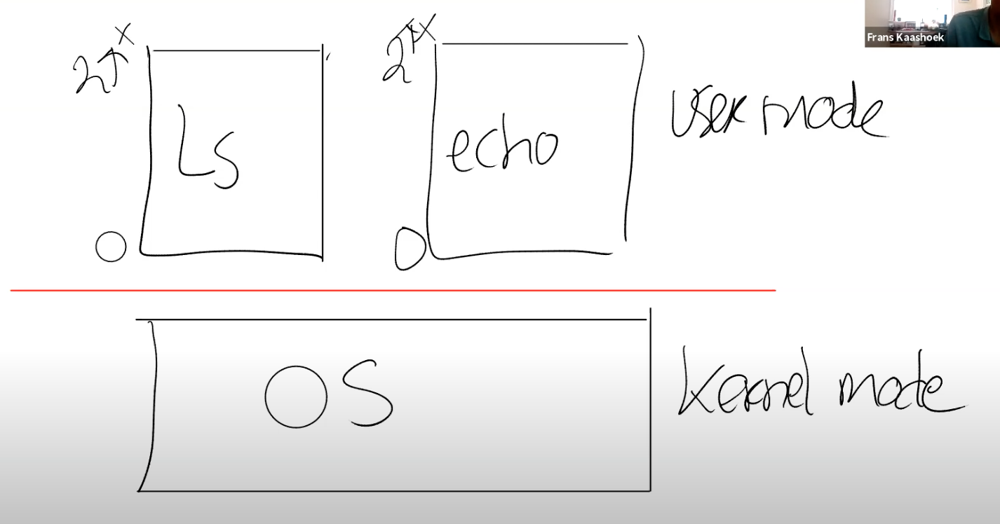
上层用户空间中的应用程序（如 ls，echo 等）都有分别自己的虚拟内存地址（0~2^x)，但页表会让他们指向不同的物理内存地址。
但当用户程序运行时，有时候会需要系统调用（如 fork (), exec () 等 c 语言封装好的系统调用) 所以必须有一种方式使得应用程序将控制权以一种协同工作的方式交给内核，这样内核才能提供服务。在 RISC-V 中，这样的指令叫 ECALL。它可以传入一个数字（e.g. ecall 3) 表示想要调用的 system call。而应用程序唯一系统调用的方式就是利用 ECALL 指令。
Q：当应用程序表现的恶意或者就是在一个死循环中，内核是如何夺回控制权限的？
A：内核会通过硬件设置一个定时器，定时器到期之后会将控制权限从用户空间转移到内核空间，之后内核就有了控制能力并可以重新调度 CPU 到另一个进程中。我们接下来会看一些更加详细的细节。
# Monolithic Kernel vs Micro Kernel
-
内核空间有时候也被称为可被信任的计算空间（Trusted Computing Base，TCB）。
-
宏内核方式：将所有的操作系统代码都运行在内核空间 TCB 中，这样会导致大量操作系统代码中若有 bug，则会导致内核的不安全。
微内核方式：在内核中运行尽量少的程序。譬如把文件系统当作一格用户程序运行在用户空间。这样意味着内核里会有更少的 bug，但是通用，这样会导致用户模式和内核模式切换频繁。
# Lecture 4
# 页表（Page Table）
如何在唯一的一段连续的物理存储单元上，实现不同地址空间的隔离呢？
—— 最常见的方法，同时也是非常灵活的一种方法就是使用页表（Page Tables）。页表是在硬件中通过处理器和内存管理单元（Memory Management Unit）实现。
-
对于任何一条带有地址的指令，其中的地址应该认为是虚拟内存地址而不是物理地址。假设寄存器 a0 中是地址 0x1000，那么这是一个虚拟内存地址。虚拟内存地址会被转到内存管理单元（MMU，Memory Management Unit）。内存管理单元会将虚拟地址翻译成物理地址。之后这个物理地址会被用来索引物理内存，并从物理内存加载，或者向物理内存存储数据。
-
通常来说，内存地址对应关系的表单也保存在内存中。所以 CPU 中需要有一些寄存器用来存放表单在物理内存中的地址。现在，在内存的某个位置保存了地址关系表单，我们假设这个位置的物理内存地址是 0x10。那么在 RISC-V 上一个叫做 SATP 的寄存器会保存地址 0x10。
注意：Page tables 保存在内存中，MMU 只是会去查看它。
-
每个应用程序都有自己独立的表单，并且这个表单定义了应用程序的地址空间。所以当操作系统将 CPU 从一个应用程序切换到另一个应用程序时，同时也需要切换 SATP 寄存器中的内容，从而指向新的进程保存在物理内存中的地址对应表单。显然地，写 SATP 寄存器将是一条特殊权限命令，由内核执行。
再说一点我自己对 page table 的理解。首先，page 本质上为一堆虚拟内存地址，page table 可以理解为虚拟地址到物理地址的映射关系。所以一个 page 可以表示一段程序、数据等等，再 page table 的帮助翻译下，就可以得到程序的内容。譬如 trampoline page 就储存着从用户态到内核态转变时，需要执行的程序。它在 user page table 和 kernel page table 下的翻译结果是一模一样的（Lecture 6. uservec 函数有介绍）。SATP 寄存器保存着当前 page table 的地址。即当且仅当改变 SATP 时，才会发生 page table 变化。由于一个进程对应了一个 page table，所以 SATP 变化时，意味着当前进程变化了，即有可能从用户模式跳进内核模式。
# 页表的工作

-
第一步：不要为每个地址创建一条表单条目，而是为每个 page 创建一条表单条目。
所以每一次地址翻译都是针对一个 page。而 RISC-V 中，一个 page 是 4KB，也就是 4096Bytes。这个大小非常常见，几乎所有的处理器都使用 4KB 大小的 page 或者支持 4KB 大小的 page。
现在，内存地址的翻译方式略微的不同了。首先对于虚拟内存地址，我们将它划分为两个部分，index 和 offset，index 用来查找 page，offset 对应的是一个 page 中的哪个字节。上图中，2^12=4KB。所以 offset 地址是 12 位，对应一个 page 是 4KB。
-
第二步：将虚拟地址中的 offset 大小，加上页表的起始地址（存在内存中那个表单），就得到了物理地址。
# 页表的分级
页表表单最多会有 2^27 条（虚拟地址中 index 长度为 27），这很大，如果每个进程都创建这么大的 page table 去翻译虚拟地址，那么将很困难。
因此，页表是有分级的。
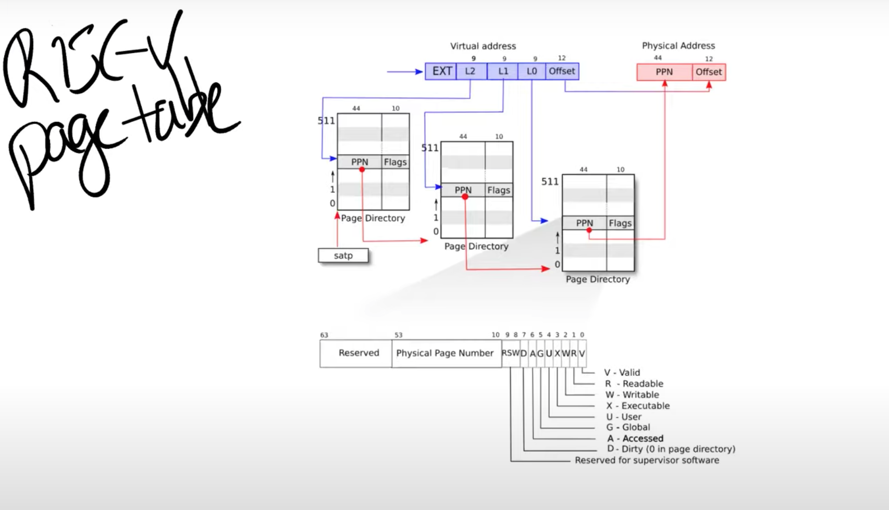
我们之前提到的虚拟内存地址中的 27bit 的 index，实际上是由 3 个 9bit 的数字组成（L2，L1，L0）。前 9 个 bit 被用来索引最高级的 page directory（注：通常 page directory 是用来索引 page table 或者其他 page directory 物理地址的表单，但是在课程中，page table，page directory， page directory table 区分并不明显，可以都认为是有相同结构的地址对应表单）。Directory 中的一条称为 PTE（Page Table Entry）。每个 Directory 有 512 条 PTE。
我们来说明这个分级是怎么操作的：
- 首先 SATP 寄存器存储了第一级 page directory 的物理地址，然后加上 L2 的 9bit 确认的 offset，得到了第一个 PPN（Physical Page Number），即第二级 page directory 的物理地址。
- 再用第二级 page directory 的物理地址，加上 L1 的 9bit 确认的 offset，得到了第三级 page directory 的物理地址。
- 再用第三级的 page directory 的物理地址，加上 L0 的 9bit 确认的 offset，得到了整个页表对应的物理地址起始地址。
- 最后把虚拟地址里的 12 位 offset，加上第三级得到的整个页表的物理地址，就得到了 27 位 index 和 12 位 offset 组成的虚拟地址对应的物理地址。
PPN 是 44bits 这和物理硬件存储单元有多少个决定。
每个 PTE 条目中，还有 10 个 FLAG 位。其实它是一大堆标志位：
- 第一个标志位是 Valid。如果 Valid bit 位为 1，那么表明这是一条合法的 PTE，你可以用它来做地址翻译。
- 下两个标志位分别是 Readable 和 Writable。表明你是否可以读 / 写这个 page。
- Executable 表明你可以从这个 page 执行指令。
- User 表明这个 page 可以被运行在用户空间的进程访问。
- 其他标志位并不是那么重要，他们偶尔会出现，前面 5 个是重要的标志位。
# 页表缓存（Translation Lookaside Buffer，TLB）
当处理器和内存交互时，由于页表的分级，需要做三次内存物理地址查找（分三级）这代价很大。因此几乎所有的处理器都会对最近使用过的虚拟地址的翻译结果进行缓存，即 Page Table Entry PTE 的缓存，称为 TLB。
Q：在这个机制中，TLB 发生在哪一步，是在地址翻译之前还是之后？
A：整个 CPU 和 MMU 都在处理器芯片中，所以在一个 RISC-V 芯片中，有多个 CPU 核，MMU 和 TLB 存在于每一个 CPU 核里面。RISC-V 处理器有 L1 cache，L2 Cache，有些 cache 是根据物理地址索引的，有些 cache 是根据虚拟地址索引的，由虚拟地址索引的 cache 位于 MMU 之前，由物理地址索引的 cache 位于 MMU 之后。
Q：之前提到，硬件会完成 3 级 page table 的查找，那为什么我们要在 XV6 中有一个 walk 函数来完成同样的工作？
A：非常好的问题。这里有几个原因，首先 XV6 中的 walk 函数设置了最初的 page table，它需要对 3 级 page table 进行编程所以它首先需要能模拟 3 级 page table。另一个原因或许你们已经在 syscall 实验中遇到了，在 XV6 中，内核有它自己的 page table，用户进程也有自己的 page table，用户进程指向 sys_info 结构体的指针存在于用户空间的 page table，但是内核需要将这个指针翻译成一个自己可以读写的物理地址。如果你查看 copy_in，copy_out，你可以发现内核会通过用户进程的 page table，将用户的虚拟地址翻译得到物理地址，这样内核可以读写相应的物理内存地址。这就是为什么在 XV6 中需要有 walk 函数的一些原因。
# Kernel Page Table——xv6 中 page table 的工作
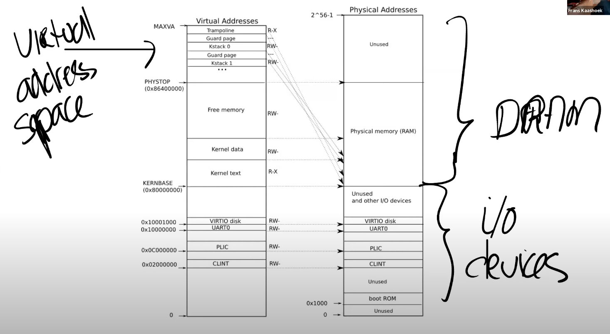
首先我们来看一下 kernel page 的分布。上图就是内核中地址的对应关系，左边是内核的虚拟地址空间，右边上半部分是物理内存或者说是 DRAM，右边下半部分是 I/O 设备。
图中右半部分的结构完全由硬件决定。当操作系统启动时，会从地址 0x80000000 开始运行，这个地址其实也是由硬件设计者决定的。
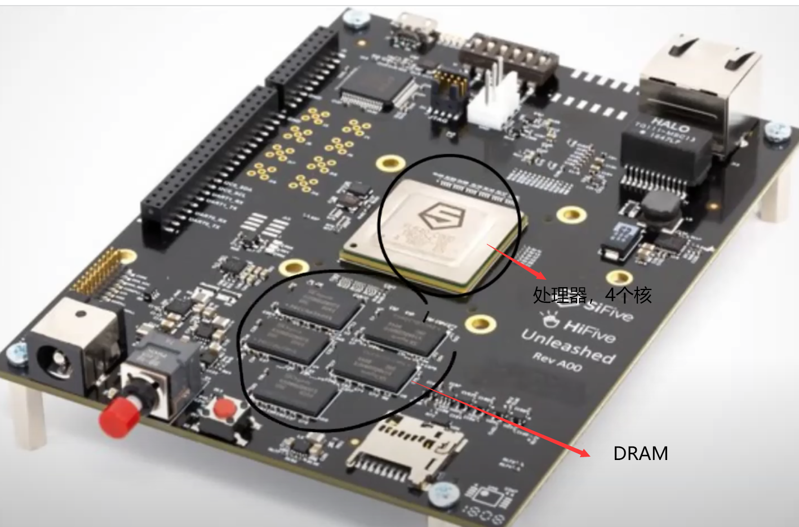
上图就是一个 RISC-V 主板。中间是 4 核处理器，每个核都有自己的 MMU 和 TLB，旁边是 DRAM 芯片。
主板的设计人员决定了，在完成了虚拟到物理地址的翻译之后，如果得到的物理地址大于 0x80000000 会走向 DRAM 芯片，如果得到的物理地址低于 0x80000000 会走向不同的 I/O 设备。这是由这个主板的设计人员决定的物理结构。如果你想要查看这里的物理结构，你可以阅读主板的手册，手册中会一一介绍物理地址对应关系：
首先，地址 0 是保留的，地址 0x10090000 对应以太网，地址 0x80000000 对应 DDR 内存，处理器外的易失存储（Off-Chip Volatile Memory），也就是主板上的 DRAM 芯片。所以，在你们的脑海里应该要记住这张主板的图片，即使我们接下来会基于你们都知道的 C 语言程序 —QEMU 来做介绍，但是最终所有的事情都是由主板硬件决定的。
回到最初那张图的右侧：物理地址的分布。可以看到最下面是未被使用的地址，这与主板文档内容是一致的（地址为 0）。地址 0x1000 是 boot ROM 的物理地址，当你对主板上电，主板做的第一件事情就是运行存储在 boot ROM 中的代码，当 boot 完成之后，会跳转到地址 0x80000000，操作系统需要确保那个地址有一些数据能够接着启动操作系统。
低于 0x80000000 的物理地址，不存在于 DRAM 中，当我们在使用这些地址的时候，指令会直接走向硬件。
这里还有一些其他的 I/O 设备：
- PLIC 是中断控制器（Platform-Level Interrupt Controller）
- CLINT（Core Local Interruptor）也是中断的一部分。所以多个设备都能产生中断，需要中断控制器来将这些中断路由到合适的处理函数。
- UART0（Universal Asynchronous Receiver/Transmitter）负责与 Console 和显示器交互。
- VIRTIO disk，与磁盘进行交互。
地址 0x02000000 对应 CLINT，当你向这个地址执行读写指令，你是向实现了 CLINT 的芯片执行读写。这里你可以认为你直接在与设备交互，而不是读写物理内存。
接下来我会切换到第一张图的左边，这就是 XV6 的虚拟内存地址空间。当机器刚刚启动时，还没有可用的 page，XV6 操作系统会设置好内核使用的虚拟地址空间，也就是这张图左边的地址分布。
因为我们想让 XV6 尽可能的简单易懂，所以这里的虚拟地址到物理地址的映射，大部分是相等的关系。比如说内核会按照这种方式设置 page table，虚拟地址 0x02000000 对应物理地址 0x02000000。这意味着左侧低于 PHYSTOP 的虚拟地址，与右侧使用的物理地址是一样的。
除此之外，这里还有两件重要的事情：
- 第一件事情是，有一些 page 在虚拟内存中的地址很靠后，比如 kernel stack 在虚拟内存中的地址就很靠后。这是因为在它之下有一个未被映射的 Guard page，这个 Guard page 对应的 PTE 的 Valid 标志位没有设置，这样，如果 kernel stack 耗尽了，它会溢出到 Guard page，但是因为 Guard page 的 PTE 中 Valid 标志位未设置，会导致立即触发 page fault，这样的结果好过内存越界之后造成的数据混乱。
- 第二件事情是权限。例如 Kernel text page 被标位 R-X，意味着你可以读它，也可以在这个地址段执行指令，但是你不能向 Kernel text 写数据。通过设置权限我们可以尽早的发现 Bug 从而避免 Bug。对于 Kernel data 需要能被写入，所以它的标志位是 RW-，但是你不能在这个地址段运行指令，所以它的 X 标志位未被设置。
# Lecture 5
# gdb 和汇编代码的执行
1 | .section .text |
Q：这里面.secion，.global，.text 分别是什么意思？
A：global 表示你可以在其他文件中调用这个函数。text 表明这里的是代码，如果你还记得 XV6 中的图 3.4:
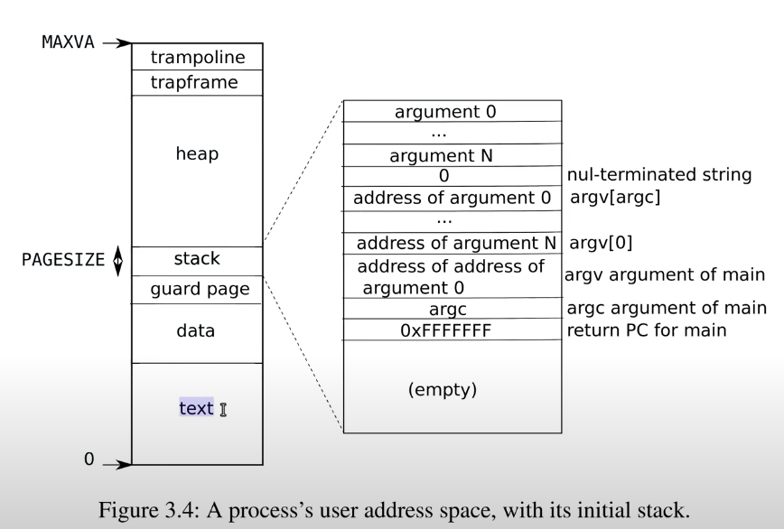
每个进程的 page table 中有一个区域是 text，汇编代码中的 text 表明这部分是代码，并且位于 page table 的 text 区域中。text 中保存的就是代码。
# 栈和栈帧
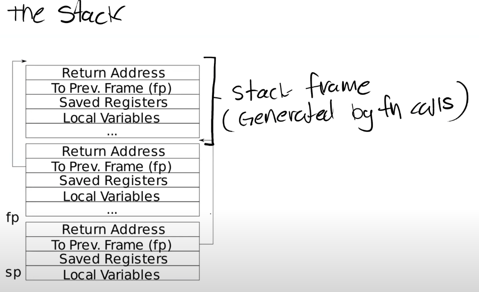
上面是一个非常简单的栈的结构图，其中每一个区域都是一个栈帧（Stack Frame），每执行一次函数调用就会压入一个栈帧。
对于 Stack 来说，是从高地址开始向低地址使用。所以栈总是向下增长。
我们想要创建一个新的栈帧的时候，总是对当前的栈顶指针（Stack Pointer）做减法。
一个函数的栈帧包含了保存的寄存器，本地变量，并且，如果函数的参数多于 8 个，额外的参数会出现在 Stack 中。所以栈帧大小并不总是一样，即使在这个图里面看起来是一样大的。
-
Return address 总是会出现在栈帧的第一位
-
指向前一个栈帧的指针也会出现在栈帧中的固定位置
有两个关于栈的重要的寄存器，第一个是 SP（Stack Pointer）指向栈顶。第二个是 FP（Frame Pointer），它指向当前栈帧的顶部。因为 Return address 和指向前一个栈帧的指针都在当前栈帧的固定位置，所以可以通过当前的 FP 寄存器寻址到这两个数据。
栈帧必须要被汇编代码创建，所以是编译器生成了汇编代码，进而创建了栈帧。所以通常，在汇编代码中，函数的最开始你们可以看到 Function prologue，之后是函数的本体，最后是 epilogue。这就是一个汇编函数通常的样子。
# RISC-V 64 寄存器

只需要注意：
- Caller Saved 寄存器在函数调用的时候不会保存
- Callee Saved 寄存器在函数调用的时候会保存
显然 RA 寄存器就是一个 Caller Saved 寄存器。因为在函数调用时，每调用一次 RA 都会变。
# Lecture 6
# Trap 机制
每当
- 程序执行系统调用
- 程序出现了类似 page fault、运算时除以 0 的错误
- 一个设备触发了中断使得当前程序运行需要响应内核设备驱动
都会发生程序运行时，用户空间到内核空间的转换。而这样的转换被称为 trap。
在 trap 的最开始，CPU 的所有状态都设置成运行用户代码而不是内核代码。在 trap 处理的过程中，我们实际上需要更改一些这里的状态，或者对状态做一些操作。这样我们才可以运行系统内核中普通的 C 程序。接下来我们先来预览一下需要做的操作：
-
首先，我们需要保存 32 个用户寄存器。（因为很显然我们需要恢复用户应用程序的执行，尤其是当用户程序随机的被设备中断所打断时。我们希望内核能够响应中断，之后在用户程序完全无感知的情况下再恢复用户代码的执行。所以这意味着 32 个用户寄存器不能被内核弄乱。但是这些寄存器又要被内核代码所使用，所以在 trap 之前，你必须先在某处保存这 32 个用户寄存器。）
-
程序计数器（Program Counter，PC）也需要在某个地方保存，它几乎跟一个用户寄存器的地位是一样的，我们需要能够在用户程序运行中断的位置继续执行用户程序。
-
我们需要将 mode 改成 supervisor mode，因为我们想要使用内核中的各种各样的特权指令。
-
SATP 寄存器现在正指向 user page table，而 user page table 只包含了用户程序所需要的内存映射和一两个其他的映射，它并没有包含整个内核数据的内存映射。所以在运行内核代码之前，我们需要将 SATP 指向 kernel page table。
-
我们需要将堆栈寄存器指向位于内核的一个地址，因为我们需要一个堆栈来调用内核的 C 函数。
-
一旦我们设置好了，并且所有的硬件状态都适合在内核中使用， 我们需要跳入内核的 C 代码。
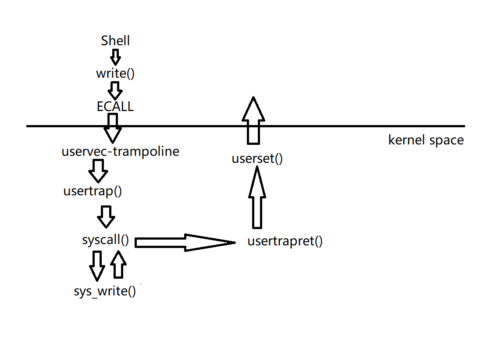
上图是用户模式下 Shell 调用用户程序 write 时的操作。
从 Shell 的角度来说，这就是个 Shell 代码中的 C 函数调用，但是实际上，write 通过执行 ECALL 指令来执行系统调用。ECALL 指令会切换到具有 supervisor mode 的内核中。这个流程是：
-
内核中执行的第一个指令是一个由汇编语言写的函数，叫做 uservec。这个函数是内核代码 trampoline.s 文件的一部分。
-
之后，在这个汇编函数中，代码执行跳转到了由 C 语言实现的函数 usertrap 中，这个函数在 trap.c 中。
-
现在代码运行在 C 中，所以代码更加容易理解。在 usertrap 这个 C 函数中，我们执行了一个叫做 syscall 的函数。
-
这个函数会在一个表单中，根据传入的代表系统调用的数字进行查找，并在内核中执行具体实现了系统调用功能的函数。对于我们来说，这个函数就是 sys_write。
-
sys_write 会将要显示数据输出到 console 上，当它完成了之后，它会返回给 syscall 函数。
-
因为我们现在相当于在 ECALL 之后中断了用户代码的执行，为了用户空间的代码恢复执行，需要做一系列的事情。在 syscall 函数中，会调用一个函数叫做 usertrapret，它也位于 trap.c 中，这个函数完成了部分方便在 C 代码中实现的返回到用户空间的工作。
-
除此之外，最终还有一些工作只能在汇编语言中完成。这部分工作通过汇编语言实现，并且存在于 trampoline.s 文件中的 userret 函数中。
在执行 ECALL 指令后，$PC 的值变成了一个非常大的虚拟地址的值，即 trampoline page。我们现在正在 trampoline page 的地址中执行程序，这个 page 包含了内核的 trap 处理代码。
ECALL 并不会切换 page table，这是 ecall 指令的一个非常重要的特点。所以这意味着，trap 处理代码必须存在于每一个 user page table 中。因为 ecall 并不会切换 page table，我们需要在 user page table 中的某个地方来执行最初的内核代码。而这个 trampoline page，是每一个 user page table 都可以通过内核找到他，以使得当我们仍然在使用 user page table 时，内核在一个地方能够执行 trap 机制的最开始的一些指令。
我们是通过 ecall 走到 trampoline page 的，而 ecall 实际上只会改变三件事情：
-
第一，ecall 将代码从 user mode 改到 supervisor mode。
-
第二，ecall 将程序计数器 PC 的值保存在了 SEPC 寄存器 (SEPC <= PC)。
-
第三，ecall 会跳转到 STVEC 寄存器指向的指令（PC <= STVEC)。
所以现在，ecall 帮我们做了一点点工作，但是实际上我们离执行内核中的 C 代码还差的很远。接下来：
- 我们需要保存 32 个用户寄存器的内容，这样当我们想要恢复用户代码执行时，我们才能恢复这些寄存器的内容。
- 因为现在我们还在 user page table，我们需要切换到 kernel page table。
- 我们需要创建或者找到一个 kernel stack，并将 Stack Pointer SP 寄存器的内容指向那个 kernel stack。这样才能给 C 代码提供栈。
- 我们还需要跳转到内核中 C 代码的某些合理的位置。
# uservec 函数
当 ECALL 执行后，PC 位于 trampoline page 地址上，准备进行 trap 开始的一些操作（上面提到的）
# 保存寄存器内容
在一些其他机器上，我们或许直接就将 32 个寄存器中的内容写到物理内存中某些合适的位置。但是我们不能在 RISC-V 中这样做，因为在 RISC-V 中，supervisor mode 下的代码不允许直接访问物理内存。（必须通过页表翻译虚拟地址）所以我们只能使用 page table 中的内容。
对于保存用户寄存器，XV6 在 RISC-V 上的实现包括了两个部分。
-
第一个部分是，XV6 在每个 user page table 都添加了映射到 trapframe page 的 PTE，这样每个进程都有自己的 trapframe page。
xv6 中，对 trapframe 是这么定义的：
1
2
3
4
5
6
7
8
9
10
11
12
13
14
15
16
17
18
19
20
21
22
23
24
25
26
27
28
29
30
31
32
33
34
35
36
37
38struct trapframe {
/* 0 */ uint64 kernel_satp; // kernel page table
/* 8 */ uint64 kernel_sp; // top of process's kernel stack
/* 16 */ uint64 kernel_trap; // usertrap()
/* 24 */ uint64 epc; // saved user program counter
/* 32 */ uint64 kernel_hartid; // saved kernel tp
/* 40 */ uint64 ra;
/* 48 */ uint64 sp;
/* 56 */ uint64 gp;
/* 64 */ uint64 tp;
/* 72 */ uint64 t0;
/* 80 */ uint64 t1;
/* 88 */ uint64 t2;
/* 96 */ uint64 s0;
/* 104 */ uint64 s1;
/* 112 */ uint64 a0;
/* 120 */ uint64 a1;
/* 128 */ uint64 a2;
/* 136 */ uint64 a3;
/* 144 */ uint64 a4;
/* 152 */ uint64 a5;
/* 160 */ uint64 a6;
/* 168 */ uint64 a7;
/* 176 */ uint64 s2;
/* 184 */ uint64 s3;
/* 192 */ uint64 s4;
/* 200 */ uint64 s5;
/* 208 */ uint64 s6;
/* 216 */ uint64 s7;
/* 224 */ uint64 s8;
/* 232 */ uint64 s9;
/* 240 */ uint64 s10;
/* 248 */ uint64 s11;
/* 256 */ uint64 t3;
/* 264 */ uint64 t4;
/* 272 */ uint64 t5;
/* 280 */ uint64 t6;
};会发现保存了很多寄存器之外，还有五个由内核事先存放在 trapframe 中的数值。
所以，如何保存用户寄存器的一半答案是，内核非常方便的将 trapframe page 映射到了每个 user page table。
-
另一半的答案在于我们之前提过的 SSCRATCH 寄存器。这个由 RISC-V 提供的 SSCRATCH 寄存器，就是为接下来的目的而创建的。在进入到 user space 之前，内核会将 trapframe page 的地址保存在这个寄存器中，也就是 0x3fffffe000 这个地址
更重要的是，RISC-V 有一个指令允许交换任意两个寄存器的值。而 SSCRATCH 寄存器的作用就是保存另一个寄存器的值，并将自己的值加载给另一个寄存器。
# uservec 的函数内容
看一下 uservec 刚开始的命令：
1 | uservec: |
会发现第一个操作就是交换 sscratch 和 a0，这样 a0 里就是 trampoline 的其实地址。之后就把用户寄存器的值存进相对于 a0 偏移的，即 trampoline 地址里的位置。
内核在返回用户空间时，会再将 a0 和 sscratch 交换回来。
继续分析 uservec 的汇编代码。执行完存储后，接着会执行：
1 | ld sp, 8(a0) |
返回看之前的 struct trampoline 的定义，会发现第八个字节存储的正好是 kernel_sp；这是内核在进入用户空间前就设置好的（事实上，机器启动时总是在内核模式，而在特定情况下再转入用户模式），它的值就是这个进程的 kernel stack 的顶端。
1 | ld tp, 32(a0) |
↑这一条指令是向 tp 寄存器写入数据。因为在 RISC-V 中，没有一个直接的方法来确认当前运行在多核处理器的哪个核上，XV6 会将 CPU 核的编号也就是 hartid 保存在 tp 寄存器。在内核中好几个地方都会使用了这个值，例如，内核可以通过这个值确定某个 CPU 核上运行了哪些进程。
1 | ld t0, 16(a0) |
↑这一条指令是向 t0 寄存器写入数据。这里写入的是我们将要执行的第一个 C 函数的指针，也就是函数 usertrap 的指针。我们在后面会使用这个指针。
1 | ld t1, 0(a0) |
↑这一条指令是向 t1 寄存器写入数据。这里写入的是 kernel page table 的地址。实际上严格来说，t1 的内容并不是 kernel page table 的地址，这是你需要向 SATP 寄存器写入的数据。它包含了 kernel page table 的地址，但是移位了（注，详见 4.3），并且包含了各种标志位。
1 | csrw satp, t1 |
↑这一条指令是交换 SATP 和 t1 寄存器。这条指令执行完成之后，当前程序会从 user page table 切换到 kernel page table。
所以现在我们成功的切换了 page table，我们在这个位置进展的很好，Stack Pointer 指向了 kernel stack；我们有了 kernel page table，可以读取 kernel data。我们已经准备好了执行内核中的 C 代码了。
Q：为什么代码没有崩溃？毕竟我们在内存中的某个位置执行代码，程序计数器保存的是虚拟地址，如果我们切换了 page table，为什么同一个虚拟地址不会通过新的 page table 寻址走到一些无关的 page 中？
A：因为我们还在 trampoline 代码中，而 trampoline 代码在用户空间和内核空间都映射到了同一个地址。trampoline page 在 user page table 中的映射与 kernel page table 中的映射是完全一样的。这两个 page table 中其他所有的映射都是不同的，只有 trampoline page 的映射是一样的，因此我们在切换 page table 时，寻址的结果不会改变，我们实际上就可以继续在同一个代码序列中执行程序而不崩溃。这是 trampoline page 的特殊之处，它同时在 user page table 和 kernel page table 都有相同的映射关系。之所以叫 trampoline page，是因为你某种程度在它上面 “弹跳” 了一下，然后从用户空间走到了内核空间。
1 | jr t0 |
↑最后一条指令是跳转到内核的 C 代码处。t0 位置对应于一个叫 usertrap 的函数的开始。
# usertrap () 函数
有很多原因都可以让程序运行进入到 usertrap 函数中来，比如系统调用，运算时除以 0，使用了一个未被映射的虚拟地址，或者是设备中断。
usertrap 某种程度上存储并恢复硬件状态，但是它也需要检查触发 trap 的原因，以确定相应的处理方式。
1 | void usertrap(void){ |
usertrap () 做的第一件事是更改 stvec 寄存器，而且要求了 usertrap 必须从用户空间发起：
1 | w_stvec((uint64)kernelvec); |
在内核中执行任何操作之前，usertrap 中先将 STVEC 指向了 kernelvec 变量，这是内核空间 trap 处理代码的位置，而不是用户空间 trap 处理代码的位置↑。
接下来我们要保存用户程序计数器，它仍然保存在 SEPC 寄存器中，但是可能发生这种情况：当程序还在内核中执行时，我们可能切换到另一个进程，并进入到那个程序的用户空间，然后那个进程可能再调用一个系统调用进而导致 SEPC 寄存器的内容被覆盖。所以，我们需要保存当前进程的 SEPC 寄存器到一个与该进程关联的内存中，这样这个数据才不会被覆盖。这里我们使用 trapframe 来保存这个程序计数器：
1 | p->trapframe->epc = r_sepc(); |
CAUSE 寄存器是 8 的时候，表示是因为系统调用才到 usertrap 函数的：
1 | if(r_scause() == 8){ |
当我们恢复用户程序时，我们希望在下一条指令恢复，也就是 ecall 之后的一条指令:
1 | p->trapframe->epc += 4; |
下一行是 xv6 在处理系统调用时显式地调用使能中断：
1 | intr_on(); |
下一行调用了 syscall ()，它的作用是从 syscall 表单中，根据系统调用的编号查找相应的系统调用函数。Shell 调用的 write 函数将 a7 设置成了系统调用编号，对于 write 来说就是 1L<<4。所以 syscall 函数的工作就是获取由 trampoline 代码保存在 trapframe 中 a7 的数字，然后用这个数字索引实现了每个系统调用的表单。
最后调用了 usrtrapret () 函数。
# usertrapret () 函数
usertrapret () 函数做了在返回到用户空间之前内核要做的工作。
1 | intr_off(); |
它首先关闭了中断。我们之前在系统调用的过程中是打开了中断的，这里关闭中断是因为我们将要更新 STVEC 寄存器来指向用户空间的 trap 处理代码，而之前在内核中的时候，我们指向的是内核空间的 trap 处理代码。
1 | w_stvec(TRAMPOLINE + (uservec - trampoline)); |
在下一行我们设置了 STVEC 寄存器指向 trampoline 代码，在那里最终会执行 sret 指令返回到用户空间。位于 trampoline 代码最后的 sret 指令会重新打开中断。
1 | p->trapframe->kernel_satp = r_satp(); // kernel page table |
接下来的几行填入了 trapframe 的内容，这些内容对于执行 trampoline 代码非常有用。这里的代码就是：
- 存储了 kernel page table 的指针
- 存储了当前用户进程的 kernel stack
- 存储了 usertrap 函数的指针，这样 trampoline 代码才能跳转到这个函数。
- 从 tp 寄存器中读取当前的 CPU 核编号，并存储在 trapframe 中，这样 trampoline 代码才能恢复这个数字，因为用户代码可能会修改这个数字
这样下一次从用户空间转换到内核空间时可以用到这些数据。
1 | unsigned long x = r_sstatus(); |
接下来我们要设置 SSTATUS 寄存器，这是一个控制寄存器。这个寄存器的 SPP bit 位控制了 sret 指令（汇编指令）的行为，该 bit 为 0 表示下次执行 sret 的时候，我们想要返回 user mode 而不是 supervisor mode。这个寄存器的 SPIE bit 位控制了，在执行完 sret 之后，是否打开中断。因为我们在返回到用户空间之后，我们的确希望打开中断，所以这里将 SPIE bit 位设置为 1。修改完这些 bit 位之后，我们会把新的值写回到 SSTATUS 寄存器。
1 | w_sepc(p->trapframe->epc); |
我们在 trampoline 代码的最后执行了 sret 指令。这条指令会将程序计数器设置成 SEPC 寄存器的值，所以现在我们将 SEPC 寄存器的值设置成之前保存的用户程序计数器的值。
1 | uint64 satp = MAKE_SATP(p->pagetable); |
接下来，我们根据 user page table 地址生成相应的 SATP 值，这样我们在返回到用户空间的时候才能完成 page table 的切换。实际上，我们会在汇编代码 trampoline 中完成 page table 的切换，并且也只能在 trampoline 中完成切换，因为只有 trampoline 中代码是同时在用户和内核空间中映射。但是我们现在还没有在 trampoline 代码中，我们现在还在一个普通的 C 函数中，所以这里我们将 page table 指针准备好，并将这个指针作为第二个参数传递给汇编代码，这个参数会出现在 a1 寄存器。
1 | uint64 fn = TRAMPOLINE + (userret - trampoline); |
这一行的作用是计算出我们将要跳转到汇编代码的地址。我们期望跳转的地址是 tampoline 中的 userret 函数，这个函数包含了所有能将我们带回到用户空间的指令。所以这里我们计算出了 userret 函数的地址。
1 | ((void (*)(uint64,uint64))fn)(TRAPFRAME, satp); |
最后一行，将 fn 指针作为一个函数指针，执行相应的函数（也就是 userret 函数）并传入两个参数，两个参数存储在 a0，a1 寄存器中。
# userret 函数
1 | csrw satp, a1 |
第一步是切换 page table。在执行 csrw satp, a1 之前，page table 应该还是巨大的 kernel page table。这条指令会将 user page table 存储在 SATP 寄存器中。执行完这条指令之后，page table 就变成了小得多的 user page table。
注，sfence.vma 是清空页表缓存
1 | ld t0, 112(a0) |
在 uservec 函数中，第一件事情就是交换 SSRATCH 和 a0 寄存器。而这里，我们将 SSCRATCH 寄存器恢复成保存好的用户的 a0 寄存器。在这里 a0 是 trapframe 的地址，因为 C 代码 usertrapret 函数中将 trapframe 地址作为第一个参数传递过来了。112 是 a0 寄存器在 trapframe 中的位置。
1 | ld ra, 40(a0) |
接下来的这些指令将 a0 寄存器指向的 trapframe 中，之前保存的寄存器的值加载到对应的各个寄存器中。之后，我们离能真正运行用户代码就很近了。
1 | csrrw a0, sscratch, a0 |
接下来，在我们即将返回到用户空间之前，我们交换 SSCRATCH 寄存器和 a0 寄存器的值。前面我们看过了 SSCRATCH 现在的值是系统调用的返回值 2，a0 寄存器是 trapframe 的地址。交换完成之后，a0 持有的是系统调用的返回值，SSCRATCH 持有的是 trapframe 的地址。之后 trapframe 的地址会一直保存在 SSCRATCH 中，直到用户程序执行了另一次 trap，再次准备从用户模式进入系统模式。现在我们还在 kernel 中。
1 | sret |
sret 是我们在 kernel 中的最后一条指令，当我执行完这条指令：
- 程序会切换回 user mode
- SEPC 寄存器的数值会被拷贝到 PC 寄存器（程序计数器）
- 重新打开中断
最后总结一下，系统调用被刻意设计的看起来像是函数调用，但是背后的 user/kernel 转换比函数调用要复杂的多。之所以这么复杂，很大一部分原因是要保持 user/kernel 之间的隔离性，内核不能信任来自用户空间的任何内容。
# Lecture 8
# 虚拟内存回顾
虚拟内存的两个优点：
-
第一个是 Isolation，隔离性。
虚拟内存使得操作系统可以为每个应用程序提供属于它们自己的地址空间。所以一个应用程序不可能有意或者无意的修改另一个应用程序的内存数据。虚拟内存同时也提供了用户空间和内核空间的隔离性，我们在之前的课程已经谈过很多相关内容，并且你们通过 page table lab 也可以理解虚拟内存的隔离性。
-
另一个好处是 level of indirection，提供了一层抽象。
处理器和所有的指令都可以使用虚拟地址，而内核会定义从虚拟地址到物理地址的映射关系。这一层抽象是我们这节课要讨论的许多有趣功能的基础。不过到目前为止，在 XV6 中内存地址的映射都比较无聊，实际上在内核中基本上是直接映射（注，也就是虚拟地址等于物理地址）。当然也有几个比较有意思的地方：
- trampoline page，它使得内核可以将一个物理内存 page 映射到多个用户地址空间中。（即不同进程的 user page table 都把 trampoline page 映射到同一片物理空间）
- guard page，它同时在内核空间和用户空间用来保护 Stack。
到目前为止，我们介绍的内存地址映射相对来说比较静态。不管是 user page table 还是 kernel page table，都是在最开始的时候设置好，之后就不会再做任何变动。
但 page fault 可以让这里的地址映射关系变得动态起来。
通过 page fault，内核可以更新 page table，这是一个非常强大的功能。因为现在可以动态地更新虚拟地址这一层抽象，结合 page table 和 page fault，内核将会有巨大的灵活性。
发生 page fault 时，内核需要什么样的信息才能够响应 page fault？
-
出错的虚拟地址，或者是触发 page fault 的源。
可以假设的是，在 page table lab 中已经看过一些相关的 panic，所以你们可能已经知道，当出现 page fault 的时候，XV6 内核会打印出错的虚拟地址，并且这个地址会被保存在 STVAL 寄存器中。
-
出错的原因，我们或许想要对不同场景的 page fault 有不同的响应。
在 SCAUSE（注，Supervisor cause 寄存器，保存了 trap 机制中进入到 supervisor mode 的原因）寄存器的介绍中，有多个与 page fault 相关的原因。比如，13 表示是因为 load 引起的 page fault；15 表示是因为 store 引起的 page fault；
-
触发 page fault 的指令的地址。
作为 trap 处理代码的一部分，这个地址存放在 SEPC（Supervisor Exception Program Counter）寄存器中，并同时会保存在 trapframe->epc 中。
# Lazy Page Allocation
sbrk 是 XV6 提供的系统调用，它使得用户应用程序能扩大自己的 heap。
当一个应用程序启动的时候，sbrk 指向的是 heap 的最底端，同时也是 stack 的最顶端。这个位置通过代表进程的数据结构中的 sz 字段表示，这里以 p->sz 表示：
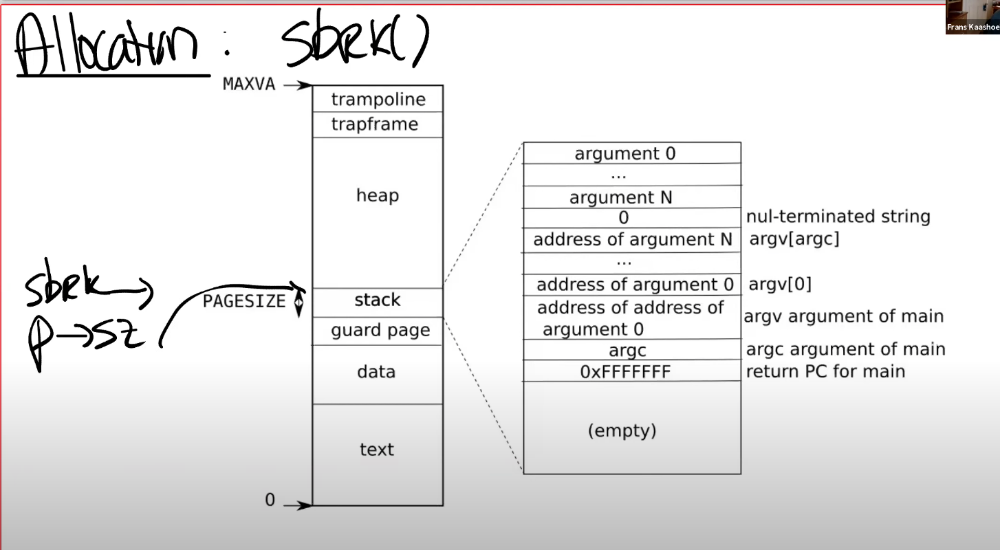
当调用 sbrk 时，它的参数是整数，代表了你想要申请的 page 数量。sbrk 会扩展 heap 的上边界。
在 XV6 中，sbrk 的实现默认是 eager allocation。这表示了，一旦调用了 sbrk，内核会立即分配应用程序所需要的物理内存。但是实际上，对于应用程序来说很难预测自己需要多少内存，所以通常来说，应用程序倾向于申请多于自己所需要的内存。这意味着，进程的内存消耗会增加许多，但是有部分内存永远也不会被应用程序所使用到。
使用虚拟内存和 page fault handler，我们完全可以用某种更聪明的方法来解决这里的问题，这里就是利用 lazy allocation：核心思想非常简单，sbrk 系统调基本上不做任何事情，唯一需要做的事情就是增大 p->sz，将 p->sz 增加 n，其中 n 是需要新分配的内存 page 数量。但是内核在这个时间点并不会分配任何物理内存。
之后在某个时间点，应用程序使用到了新申请的那部分内存，这时会触发 page fault，因为我们还没有将新的内存映射到 page table。使用到了新申请的那部分内存，这时会触发 page fault，因为我们还没有将新的内存映射到 page table。所以，如果我们解析一个大于旧的 p->sz，但是又小于新的 p->sz（注，也就是旧的 p->sz + n）的虚拟地址，我们希望内核能够分配一个内存 page，并且重新执行指令。
** 所以，当我们看到了一个 page fault，相应的虚拟地址小于当前 p->sz，同时大于 stack，那么我们就知道这是一个来自于 heap 的地址，但是内核还没有分配任何物理内存。** 所以对于这个 page fault 的响应也理所当然的直接明了：在 page fault handler 中，通过 kalloc 函数分配一个内存 page；初始化这个 page 内容为 0；将这个内存 page 映射到 user page table 中；最后重新执行指令。
代码部分，我们可以修改 sys_srbk 函数
1 | uint64 |
修改完之后启动 XV6，并且执行 “echo hi”，我们会得到一个 page fault。
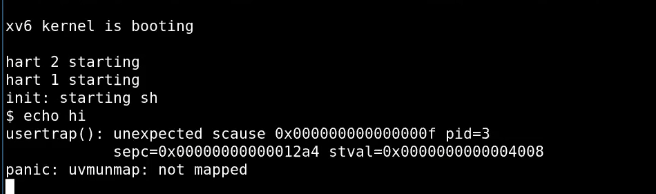
之所以会得到一个 page fault 是因为，在 Shell 中执行程序，Shell 会先 fork 一个子进程，子进程会通过 exec 执行 echo。在这个过程中，Shell 会申请一些内存，所以 Shell 会调用 sys_sbrk，然后就出错了，因为 sbrk 并没有申请到任何实际物理内存。
这里输出的内容包含了一些有趣的信息：
- 这里输出了 SCAUSE 寄存器内容，我们可以看到它的值是 15，表明这是一个 store page fault。
- 我们可以看到进程的 pid 是 3，这极可能是 Shell 的 pid。
- 我们还可以看到 SEPC 寄存器的值，是 0x12a4。
- 最后还可以看到出错的虚拟内存地址，也就是 STVAL 寄存器的内容，是 0x4008。
在 trap.c 文件中，会根据 scauce 寄存器的值来处理异常。于是我们需要添加 page fault 的情况：
1 | if (r_scause() == 15){ |
在上面增加的代码中，首先打印一些调试信息。之后分配一个物理内存 page，如果 ka 等于 0，表明没有物理内存我们现在 Out Of Memory 了，我们会杀掉进程。
如果有物理内存，首先会将内存内容设置为 0，之后将物理内存 page 指向用户地址空间中合适的虚拟内存地址。具体来说，我们首先将虚拟地址向下取整，这里引起 page fault 的虚拟地址是 0x4008，向下取整之后是 0x4000。之后我们将物理内存地址跟取整之后的虚拟内存地址的关系加到 page table 中。对应的 PTE 需要设置常用的权限标志位，在这里是 u，w，r bit 位。
此外，在 vm.c 中的 uvmunmap () 函数中也需要相关改变：
1 | if((*pte & PTE_V) == 0) |
之前的 panic 表明，我们尝试在释放一个并没有 map 的 page。怎么会发生这种情况呢？唯一的原因是 sbrk 增加了 p->sz，但是应用程序还没有使用那部分内存。因为对应的物理内存还没有分配，所以这部分新增加的内存的确没有映射关系。我们现在是 lazy allocation，我们只会为需要的内存分配物理内存 page。如果我们不需要这部分内存，那么就不会存在 map 关系，这非常的合理。相应的，我们对于这部分内存也不能释放，因为没有实际的物理内存可以释放，所以这里最好的处理方式就是 continue，跳过并处理下一个 page。
# Zero fill on demand
当你查看一个用户程序的地址空间时，存在 text 区域，data 区域，同时还有一个 BSS 区域。当编译器在生成二进制文件时，编译器会填入这三个区域。text 区域是程序的指令，data 区域存放的是初始化了的全局变量，BSS 包含了未被初始化或者初始化为 0 的全局变量。
通常优化的地方是，在 BSS 中有如此多的内容全是 0 的 page，在物理内存中，我只需要分配一个 page，这个 page 的内容全是 0。然后将所有虚拟地址空间的全 0 的 page 都 map 到这一个物理 page 上。这样至少在程序启动的时候能节省大量的物理内存分配。
当然这里的 mapping 需要非常的小心，我们不能允许对于这个 page 执行写操作，因为所有的虚拟地址空间 page 都期望 page 的内容是全 0，所以这里的 PTE 都是只读的。之后在某个时间点，应用程序尝试写 BSS 中的一个 page 时，比如说需要更改一两个变量的值，我们会得到 page fault。那么，对于这个特定场景中的 page fault 我们该做什么呢？
应该创建一个新的 page，将其内容设置为 0，并重新执行指令。
很显然，这样做的话程序启动会变得非常快，可以节省大量内存。但相对地，程序运行中的 write 和 update 都会触发 page fault，然后需要重新分配 page 时，会非常麻烦，因为要进出内核（在 trap 处理程序中，有大量的复制寄存器等的操作，会特别慢）。
# Copy On Write Fork
当 Shell 处理指令时，它会通过 fork 创建一个子进程。fork 会创建一个 Shell 进程的拷贝，所以这时我们有一个父进程（原来的 Shell）和一个子进程。Shell 的子进程执行的第一件事情就是调用 exec 运行一些其他程序，比如运行 echo。
现在的情况是，fork 创建了 Shell 地址空间的一个完整的拷贝，而 exec 做的第一件事情就是丢弃这个地址空间，取而代之的是一个包含了 echo 的地址空间。这里看起来有点浪费。
具体来说，我们最开始有了一个父进程的虚拟地址空间，然后我们有了子进程的虚拟地址空间。在物理内存中，XV6 中的 Shell 通常会有 4 个 page，当调用 fork 时，基本上就是创建了 4 个新的 page，并将父进程 page 的内容拷贝到 4 个新的子进程的 page 中。但是之后，一旦调用了 exec，我们又会释放这些 page，并分配新的 page 来包含 echo 相关的内容。
对于这个特定场景有一个非常有效的优化：当我们创建子进程时，与其创建，分配并拷贝内容到新的物理内存，其实我们可以直接共享父进程的物理内存 page。所以这里，我们可以设置子进程的 PTE 指向父进程对应的物理内存 page。
当然，再次要提及的是，我们这里需要非常小心。因为一旦子进程想要修改这些内存的内容，相应的更新应该对父进程不可见，因为我们希望在父进程和子进程之间有强隔离性，所以这里我们需要更加小心一些。为了确保进程间的隔离性，我们可以将这里的父进程和子进程的 PTE 的标志位都设置成只读的。
在某个时间点，当我们需要更改内存的内容时，我们会得到 page fault。因为父进程和子进程都会继续运行，而父进程或者子进程都可能会执行 store 指令来更新一些全局变量，这时就会触发 page fault，因为现在在向一个只读的 PTE 写数据。
在得到 page fault 之后，我们需要拷贝相应的物理 page。假设现在是子进程在执行 store 指令，那么我们会分配一个新的物理内存 page，然后将 page fault 相关的物理内存 page 拷贝到新分配的物理内存 page 中，并将新分配的物理内存 page 映射到子进程。这时，新分配的物理内存 page 只对子进程的地址空间可见，所以我们可以将相应的 PTE 设置成可读写，并且我们可以重新执行 store 指令。实际上，对于触发刚刚 page fault 的物理 page，因为现在只对父进程可见，相应的 PTE 对于父进程也变成可读写的了。
在 copy-on-write lab 中，还有个细节需要注意。目前在 XV6 中，除了 trampoline page 外，一个物理内存 page 只属于一个用户进程。trampoline page 永远也不会释放，所以也不是什么大问题。但是对于这里的物理内存 page，现在有多个用户进程或者说多个地址空间都指向了相同的物理内存 page，举个例子，当父进程退出时我们需要更加的小心，因为我们要判断是否能立即释放相应的物理 page。如果有子进程还在使用这些物理 page，而内核又释放了这些物理 page，我们将会出问题。
我们需要对于每一个物理内存 page 的引用进行计数，当我们释放虚拟 page 时，我们将物理内存 page 的引用数减 1，如果引用数等于 0，那么我们就能释放物理内存 page。
# Demand Paging
为什么我们要以 eager 的方式将程序加载到内存中？为什么不再等等，直到应用程序实际需要这些指令的时候再加载内存？程序的二进制文件可能非常的巨大，将它全部从磁盘加载到内存中将会是一个代价很高的操作。又或者 data 区域的大小远大于常见的场景所需要的大小，我们并不一定需要将整个二进制都加载到内存中。
所以对于 exec，在虚拟地址空间中，我们为 text 和 data 分配好地址段，但是相应的 PTE 并不对应任何物理内存 page。对于这些 PTE，我们只需要将 valid bit 位设置为 0 即可。
应用程序是从地址 0 开始运行。text 区域从地址 0 开始向上增长。位于地址 0 的指令是会触发第一个 page fault 的指令，因为我们还没有真正的加载内存。
那么该如何处理这里的 page fault 呢？首先我们可以发现，这些 page 是 on-demand page。我们需要在某个地方记录了这些 page 对应的程序文件，我们在 page fault handler 中需要从程序文件中读取 page 数据，加载到内存中；之后将内存 page 映射到 page table；最后再重新执行指令。
# Lecture 9
# 中断硬件
中断与系统调用主要有 3 个小的差别：
-
asynchronous（异步的）
当硬件生成中断时，Interrupt handler 与当前运行的进程在 CPU 上没有任何关联。但如果是系统调用的话，系统调用发生在运行进程的 context 下。
-
concurrency
我们这节课会稍微介绍并发，在下一节课，我们会介绍更多并发相关的内容。对于中断来说，CPU 和生成中断的设备是并行的在运行。网卡自己独立的处理来自网络的 packet，然后在某个时间点产生中断，但是同时，CPU 也在运行。所以我们在 CPU 和设备之间是真正的并行的，我们必须管理这里的并行。
-
program device
我们这节课主要关注外部设备，例如网卡，UART，而这些设备需要被编程。每个设备都有一个编程手册，就像 RISC-V 有一个包含了指令和寄存器的手册一样。设备的编程手册包含了它有什么样的寄存器，它能执行什么样的操作，在读写控制寄存器的时候，设备会如何响应。不过通常来说，设备的手册不如 RISC-V 的手册清晰，这会使得对于设备的编程会更加复杂。
下图是来自于 SiFive 有关处理器的文档，图中的右侧是各种各样的设备，例如 UART0。我们在之前的课程已经知道 UART0 会映射到内核内存地址的某处，而所有的物理内存都映射在地址空间的 0x80000000 之上。（见 Lecture 4）
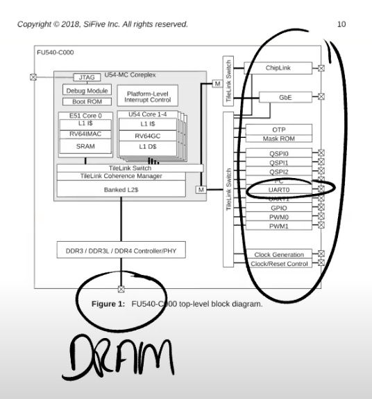
所有的设备都连接到处理器上，处理器上是通过 Platform Level Interrupt Control，简称 PLIC 来处理设备中断。PLIC 会管理来自于外设的中断。如果我们再进一步深入的查看 PLIC 的结构图：

从左上角可以看出，我们有 53 个不同的来自于设备的中断。这些中断到达 PLIC 之后，PLIC 会路由这些中断。图的右下角是 CPU 的核，PLIC 会将中断路由到某一个 CPU 的核。如果所有的 CPU 核都正在处理中断，PLIC 会保留中断直到有一个 CPU 核可以用来处理中断。所以 PLIC 需要保存一些内部数据来跟踪中断的状态。
这里的具体流程是：
- PLIC 会通知当前有一个待处理的中断
- 其中一个 CPU 核会 Claim 接收中断，这样 PLIC 就不会把中断发给其他的 CPU 处理
- CPU 核处理完中断之后，CPU 会通知 PLIC
- PLIC 将不再保存中断的信息
# 设备即文件
通常来说，管理设备的代码称为驱动，所有的驱动都在内核中。
我们今天要看的是 UART 设备的驱动，代码在 uart.c 文件中。如果我们查看代码的结构，我们可以发现大部分驱动都分为两个部分，bottom/top。
- bottom 部分通常是 Interrupt handler。当一个中断送到了 CPU，并且 CPU 设置接收这个中断，CPU 会调用相应的 Interrupt handler。Interrupt handler 并不运行在任何特定进程的 context 中，它只是处理中断。
- top 部分，是用户进程，或者内核的其他部分调用的接口。对于 UART 来说，这里有 read/write 接口，这些接口可以被更高层级的代码调用。
- 通常情况下，驱动中会有一些队列（或者说 buffer），top 部分的代码会从队列中读写数据，而 Interrupt handler（bottom 部分）同时也会向队列中读写数据。这里的队列可以将并行运行的设备和 CPU 解耦开来。
接下来我们看一下如何对设备进行编程。
通常来说，编程是通过 memory mapped I/O 完成的。在 SiFive 的手册中，设备地址出现在物理地址的特定区间内，这个区间由主板制造商决定。
操作系统需要知道这些设备位于物理地址空间的具体位置，然后再通过普通的 load/store 指令对这些地址进行编程。
设备即文件：load/store 指令实际上的工作就是读写设备的控制寄存器。例如，对网卡执行 store 指令时，CPU 会修改网卡的某个控制寄存器，进而导致网卡发送一个 packet。所以这里的 load/store 指令不会读写内存，而是会操作设备。
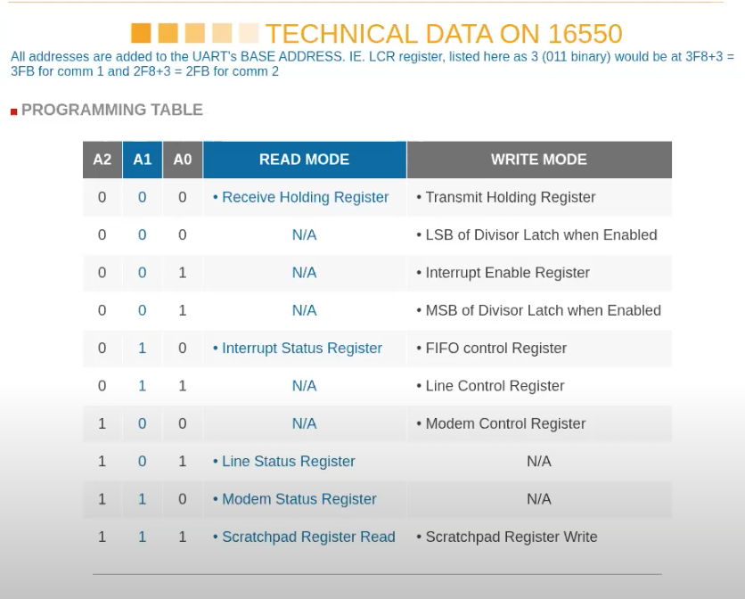
上图是 16550——qemu 模拟的 UART 设备的文档。
这是一个很简单的芯片，图中表明了芯片拥有的寄存器。例如对于控制寄存器 000，如果写它会将数据写入到寄存器中并被传输到其他地方，如果读它可以读出存储在寄存器中的内容。
UART 可以让你能够通过串口发送数据 bit，在线路的另一侧会有另一个 UART 芯片，能够将数据 bit 组合成一个个 Byte。
这里还有一些其他可以控制的地方，例如控制寄存器 001，可以通过它来控制 UART 是否产生中断。实际上对于一个寄存器，其中的每个 bit 都有不同的作用。例如对于寄存器 001，也就是 IER 寄存器，bit0-bit3 分别控制了不同的中断。
# xv6 中设置中断
当 XV6 启动时，Shell 会输出提示符 “$”，如果我们在键盘上输入 ls，最终可以看到 “$ ls”。我们接下来通过研究 Console 是如何显示出 “$ ls”，来看一下设备中断是如何工作的。
对于 “$” 来说，实际上就是设备会将字符传输给 UART 的寄存器，UART 之后会在发送完字符之后产生一个中断。在 QEMU 中，模拟的线路的另一端会有另一个 UART 芯片（模拟的），这个 UART 芯片连接到了虚拟的 Console，它会进一步将 “$ ” 显示在 console 上。
另一方面，对于 “ls”，这是用户输入的字符。键盘连接到了 UART 的输入线路，当你在键盘上按下一个按键，UART 芯片会将按键字符通过串口线发送到另一端的 UART 芯片。另一端的 UART 芯片先将数据 bit 合并成一个 Byte，之后再产生一个中断，并告诉处理器说这里有一个来自于键盘的字符。之后 Interrupt handler 会处理来自于 UART 的字符。
RISC-V 有许多与中断相关的寄存器：
-
SIE（Supervisor Interrupt Enable）寄存器。
这个寄存器中有一个 bit（E）专门针对例如 UART 的外部设备的中断；有一个 bit（S）专门针对软件中断，软件中断可能由一个 CPU 核触发给另一个 CPU 核；还有一个 bit（T）专门针对定时器中断。我们这节课只关注外部设备的中断。
-
SSTATUS（Supervisor Status）寄存器。
这个寄存器中有一个 bit 来打开或者关闭中断。每一个 CPU 核都有独立的 SIE 和 SSTATUS 寄存器，除了通过 SIE 寄存器来单独控制特定的中断，还可以通过 SSTATUS 寄存器中的一个 bit 来控制所有的中断。
-
SIP（Supervisor Interrupt Pending）寄存器。
当发生中断时，处理器可以通过查看这个寄存器知道当前是什么类型的中断。
-
SCAUSE 寄存器，这个寄存器我们之前看过很多次。它会表明当前状态的原因是中断。
-
STVEC 寄存器，它会保存当 trap，page fault 或者中断发生时，CPU 运行的用户程序的程序计数器，这样才能在稍后恢复程序的运行。
接下来看看代码，首先是位于 start.c 的 start 函数。
1 | void start() { |
这里将所有的中断都设置在 Supervisor mode，然后设置 SIE 寄存器来接收 External，软件和定时器中断，之后初始化定时器。
然后看一下 start () 中 jump 到的 main 函数是怎样处理中断的：
1 | void main(){ |
-
第一个外设是 console（尽管他是模拟的）
1
2
3
4
5
6
7
8
9
10
11
12
13
14
15
16
17
18
19
20
21
22
23
24
25
26uartinit(void){
// disable interrupts.
WriteReg(IER, 0x00);
// special mode to set baud rate.
WriteReg(LCR, LCR_BAUD_LATCH);
// LSB for baud rate of 38.4K.
WriteReg(0, 0x03);
// MSB for baud rate of 38.4K.
WriteReg(1, 0x00);
// leave set-baud mode,
// and set word length to 8 bits, no parity.
WriteReg(LCR, LCR_EIGHT_BITS);
// reset and enable FIFOs.
WriteReg(FCR, FCR_FIFO_ENABLE | FCR_FIFO_CLEAR);
// enable transmit and receive interrupts.
WriteReg(IER, IER_TX_ENABLE | IER_RX_ENABLE);
initlock(&uart_tx_lock, "uart");
}
consoleinit(void){
initlock(&cons.lock, "cons");
uartinit();
// connect read and write system calls
// to consoleread and consolewrite.
devsw[CONSOLE].read = consoleread;
devsw[CONSOLE].write = consolewrite;
}这里首先初始化了锁，我们现在还不关心这个锁。然后调用了 uartinit，uartinit 函数位于 uart.c 文件。这个函数实际上就是配置好 UART 芯片使其可以被使用。
这里的流程是先关闭中断，之后设置波特率，设置字符长度为 8bit，重置 FIFO，最后再重新打开中断。
-
以上就是 uartinit 函数，运行完这个函数之后，原则上 UART 就可以生成中断了。但是因为我们还没有对 PLIC 编程，所以中断不能被 CPU 感知。最终，在 main 函数中，需要调用 plicinit 函数:
1
2
3
4
5void plicinit(void){
// set desired IRQ priorities non-zero (otherwise disabled).
*(uint32*)(PLIC + UART0_IRQ*4) = 1;
*(uint32*)(PLIC + VIRTIO0_IRQ*4) = 1;
}PLIC 与外设一样，也占用了一个 I/O 地址（0xC000_0000）。代码的第一行使能了 UART 的中断，这里实际上就是设置 PLIC 会接收哪些中断，进而将中断路由到 CPU。类似的，代码的第二行设置 PLIC 接收来自 IO 磁盘的中断。
-
main 函数中，plicinit 之后就是 plicinithart 函数。plicinit 是由 0 号 CPU 运行，之后，每个 CPU 的核都需要调用 plicinithart 函数表明对于哪些外设中断感兴趣。
1
2
3
4
5
6
7
8
9void plicinithart(void){
int hart = cpuid();
// set uart's enable bit for this hart's S-mode.
*(uint32*)PLIC_SENABLE(hart)= (1 << UART0_IRQ) | (1 << VIRTIO0_IRQ);
// set this hart's S-mode priority threshold to 0.
*(uint32*)PLIC_SPRIORITY(hart) = 0;
}所以在 plicinithart 函数中，每个 CPU 的核都表明自己对来自于 UART 和 VIRTIO 的中断感兴趣。因为我们忽略中断的优先级，所以我们将优先级设置为 0。
-
到目前为止，我们有了生成中断的外部设备，我们有了 PLIC 可以传递中断到单个的 CPU。但是 CPU 自己还没有设置好接收中断，因为我们还没有设置好 SSTATUS 寄存器。在 main 函数的最后，程序调用了 scheduler 函数，
1
2
3
4
5
6
7
8
9
10
11
12
13
14
15
16
17
18
19
20
21
22
23
24
25
26
27
28
29
30static inline void intr_on(){
w_sstatus(r_sstatus() | SSTATUS_SIE);
}
void scheduler(void){
struct proc *p;
struct cpu *c = mycpu();
c->proc = 0;
for(;;){
// Avoid deadlock by ensuring that devices can interrupt.
intr_on();
for(p = proc; p < &proc[NPROC]; p++) {
acquire(&p->lock);
if(p->state == RUNNABLE) {
// Switch to chosen process. It is the process's job
// to release its lock and then reacquire it
// before jumping back to us.
p->state = RUNNING;
c->proc = p;
swtch(&c->context, &p->context);
// Process is done running for now.
// It should have changed its p->state before coming back.
c->proc = 0;
}
release(&p->lock);
}
}
}scheduler 函数主要是运行进程。但是在实际运行进程之前，会执行 intr_on 函数来使得 CPU 能接收中断。intr_on 函数只完成一件事情，就是设置 SSTATUS 寄存器，打开中断标志位。
在这个时间点，中断被完全打开了。如果 PLIC 正好有 pending 的中断，那么这个 CPU 核会收到中断。
以上就是中断的基本设置。
# UART 驱动的 top 部分
先看一下 init.c 中的 main 函数，它是系统启动后运行的第一个进程：
1 | int main(void){ |
首先这个进程的 main 函数创建了一个代表 Console 的设备。这里通过 mknod 操作创建了 console 设备。因为这是第一个打开的文件，所以这里的文件描述符 0。之后通过 dup 创建 stdout 和 stderr。这里实际上通过复制文件描述符 0，得到了另外两个文件描述符 1，2。最终文件描述符 0，1，2 都用来代表 Console。(注：这里不区分设备和文件)
Shell 程序首先打开文件描述符 0，1，2。之后 Shell 向文件描述符 2 打印提示符 “$”:
1 | int getcmd(char *buf, int nbuf){ |
尽管 Console 背后是 UART 设备，但是从应用程序来看，它就像是一个普通的文件。Shell 程序只是向文件描述符 2 写了数据，它并不知道文件描述符 2 对应的是什么。在 Unix 系统中，设备是由文件表示。我们来看一下这里的 fprintf 是如何工作的。我们会发现无论是哪个 print，最后都会调用 putc 函数：
1 | static void putc(int fd, char c){ |
代码只是调用了 write 系统调用。在我们的例子中，fd 对应的就是文件描述符 2，c 是字符 “$”。所以由 Shell 输出的每一个字符都会触发一个 write 系统调用。之前我们已经看过了 write 系统调用最终会走到 sysfile.c 文件的 sys_write 函数。
sys_write 又会调用 filewrite 函数：
1 | filewrite(struct file *f, uint64 addr, int n) |
在 filewrite 函数中首先会判断文件描述符的类型。mknod 生成的文件描述符属于设备（FD_DEVICE），而对于设备类型的文件描述符，我们会为这个特定的设备执行设备相应的 write 函数。因为我们现在的设备是 Console，所以我们知道这里会调用 console.c 中的 consolewrite 函数。
1 | int consolewrite(int user_src, uint64 src, int n){ |
这里先通过 either_copyin 将字符拷入，之后调用 uartputc 函数。uartputc 函数将字符写入给 UART 设备，所以你可以认为 consolewrite 是一个 UART 驱动的 top 部分。uart.c 文件中的 uartputc 函数会实际的打印字符。
uartputc 函数会稍微有趣一些。在 UART 的内部会有一个 buffer 用来发送数据，buffer 的大小是 32 个字符。同时还有一个为 consumer 提供的读指针和为 producer 提供的写指针，来构建一个环形的 buffer:
1 | void uartputc(int c){ |
在我们的例子中，Shell 是 producer，所以需要调用 uartputc 函数。在函数中第一件事情是判断环形 buffer 是否已经满了。如果读写指针相同，那么 buffer 是空的，如果写指针加 1 等于读指针，那么 buffer 满了。
当 buffer 是满的时候，向其写入数据是没有意义的，所以这里会 sleep 一段时间，将 CPU 出让给其他进程。当然，对于我们来说，buffer 必然不是满的，因为提示符 “$” 是我们送出的第一个字符。所以代码会走到 else，字符会被送到 buffer 中，更新写指针，之后再调用 uartstart 函数。
1 | uartstart(){ |
uartstart 就是通知设备执行操作。首先是检查当前设备是否空闲，如果空闲的话，我们会从 buffer 中读出数据，然后将数据写入到 THR（Transmission Holding Register）发送寄存器。这里相当于告诉设备，我这里有一个字节需要你来发送。一旦数据送到了设备，系统调用会返回，用户应用程序 Shell 就可以继续执行。
# UART 驱动的 bottom 部分
在我们向 Console 输出字符时，如果发生了中断，RISC-V 会做什么操作？我们之前已经在 SSTATUS 寄存器中打开了中断，所以处理器会被中断。假设键盘生成了一个中断并且发向了 PLIC，PLIC 会将中断路由给一个特定的 CPU 核，并且如果这个 CPU 核设置了 SIE 寄存器的 E bit（注，针对外部中断的 bit 位），那么会发生以下事情：
- 首先，会清除 SIE 寄存器相应的 bit，这样可以阻止 CPU 核被其他中断打扰，该 CPU 核可以专心处理当前中断。处理完成之后，可以再次恢复 SIE 寄存器相应的 bit。
- 之后，会设置 SEPC 寄存器为当前的程序计数器。我们假设 Shell 正在用户空间运行，突然来了一个中断，那么当前 Shell 的程序计数器会被保存。
- 之后，要保存当前的 mode。在我们的例子里面，因为当前运行的是 Shell 程序，所以会记录 user mode。
- 再将 mode 设置为 Supervisor mode。
- 最后将程序计数器的值设置成 STVEC 的值。在 XV6 中，STVEC 保存的要么是 uservec 或者 kernelvec 函数的地址，具体取决于发生中断时程序运行是在用户空间还是内核空间。在我们的例子中，Shell 运行在用户空间，所以 STVEC 保存的是 uservec 函数的地址。
在之前的 trap.c 的 usertrap () 中，我们处理来自用户模式的中断。其中，有一行：
1 | if((which_dev = devintr()) != 0) |
在 trap.c 的 devintr 函数中，首先会通过 SCAUSE 寄存器判断当前中断是否是来自于外设的中断。如果是的话，再调用 plic_claim 函数来获取中断。
1 | int |
plic_claim 函数位于 plic.c 文件中。在这个函数中，当前 CPU 核会告知 PLIC，自己要处理中断，PLIC_SCLAIM 会将中断号返回，对于 UART 来说，返回的中断号是 10。
1 | void |
从 devintr 函数可以看出，如果是 UART 中断，那么会调用 uartintr 函数。位于 uart.c 文件的 uartintr 函数，而此时 uargetc 是空（因为只向 UART 写数据还没读到数据）于是进入 uartstart（）函数，类似之前。
# interrupt 相关并发
-
设备与 CPU 是并行运行的。
例如当 UART 向 Console 发送字符的时候，CPU 会返回执行 Shell，而 Shell 可能会再执行一次系统调用，向 buffer 中写入另一个字符，这些都是在并行的执行。这里的并行称为 producer-consumer 并行。
-
中断会停止当前运行的程序。
例如，Shell 正在运行第 212 个指令，突然来了个中断，Shell 的执行会立即停止。对于用户空间代码，这并不是一个大的问题，因为当我们从中断中返回时，我们会恢复用户空间代码，并继续执行执行停止的指令。我们已经在 trap 和 page fault 中看过了这部分内容。但是当内核被中断打断时，事情就不一样了。所以，代码运行在 kernel mode 也会被中断，这意味着即使是内核代码，也不是直接串行运行的。在两个内核指令之间，取决于中断是否打开，可能会被中断打断执行。对于一些代码来说，如果不能在执行期间被中断，这时内核需要临时关闭中断，来确保这段代码的原子性。
-
驱动的 top 和 bottom 部分是并行运行的。
例如，Shell 会在传输完提示符 “$” 之后再调用 write 系统调用传输空格字符，代码会走到 UART 驱动的 top 部分（注，uartputc 函数），将空格写入到 buffer 中。但是同时在另一个 CPU 核，可能会收到来自于 UART 的中断，进而执行 UART 驱动的 bottom 部分，查看相同的 buffer。所以一个驱动的 top 和 bottom 部分可以并行的在不同的 CPU 上运行。这里我们通过 lock 来管理并行。因为这里有共享的数据，我们想要 buffer 在一个时间只被一个 CPU 核所操作。
这里我将会关注在第一点，也就是 producer/consumser 并发。这是驱动中的非常常见的典型现象。如你们所见的，在驱动中会有一个 buffer，在我们之前的例子中，buffer 是 32 字节大小。并且有两个指针，分别是读指针和写指针。如果两个指针相等，那么 buffer 是空的。当 Shell 调用 uartputc 函数时，会将字符，例如提示符 “$”，写入到写指针的位置，并将写指针加 1。这就是 producer 对于 buffer 的操作。producer 可以一直写入数据，直到写指针 + 1 等于读指针，因为这时，buffer 已经满了。当 buffer 满了的时候，producer 必须停止运行。我们之前在 uartputc 函数中看过，如果 buffer 满了，代码会 sleep，暂时搁置 Shell 并运行其他的进程。
Interrupt handler，也就是 uartintr 函数，在这个场景下是 consumer，每当有一个中断，并且读指针落后于写指针，uartintr 函数就会从读指针中读取一个字符再通过 UART 设备发送，并且将读指针加 1。当读指针追上写指针，也就是两个指针相等的时候，buffer 为空，这时就不用做任何操作。
# Lecture 10
多核处理器和锁
# 为什么需要锁？
使用多个 CPU 核可以带来性能的提升，如果一个应用程序运行在多个 CPU 核上，并且执行了系统调用，那么内核需要能够处理并行的系统调用。如果系统调用并行的运行在多个 CPU 核上，那么它们可能会并行地访问内核中共享的数据结构。
一个核在读取数据，另一个核在写入数据，我们需要使用锁来协调对于共享数据的更新，以确保数据的一致性。
freelist 是 XV6 中的一个非常简单的数据结构，它会将所有的可用的内存 page 保存于一个列表中。这样当 kalloc 函数需要一个内存 page 时，它可以从 freelist 中获取。
从函数中可以看出，这里有一个锁 kmem.lock
1 | void kfree(void *pa){ |
# Race condition
A race condition is the condition of an electronics, software, or other system where the system’s substantive behaviors dependent on the sequence or timing of other uncontrollable events - Wikipedia
如果输出的结果依赖于不受控制的事件的出现顺序，那么我们便称发生了 race condition。
在 OS 中，可以认为多核 CPU 对内存的读取是不受控制的（不知道什么时候就要读取）
# 锁是如何避免 race condition 的
首先在脑海里应该有多个 CPU 核在运行，比如说 CPU0 在运行指令，CPU1 也在运行指令，这两个 CPU 核都连接到同一个内存上。在前面的代码中，数据 freelist 位于内存中，它里面记录了 2 个内存 page。假设两个 CPU 核在相同的时间调用 kfree。
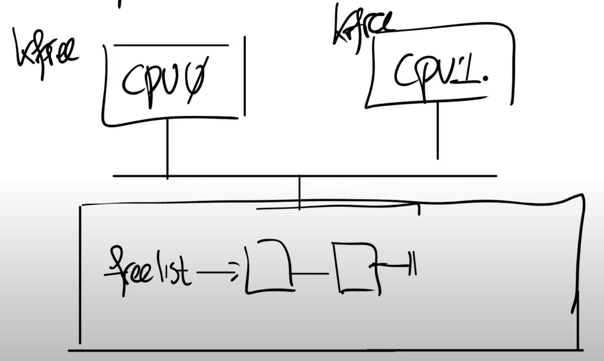
kfree 函数接收一个物理地址 pa（释放了的物理 page 地址）作为参数，freelist 是个单链表，kfree 中将 pa 作为单链表的新的 head 节点，并更新 freelist 指向 pa。
当两个 CPU 都调用 kfree 时，CPU0 想要释放一个 page，CPU1 也想要释放一个 page，现在这两个 page 都需要加到 freelist 中。
可以想象，如果不加以先后顺序的区分，很可能导致产生两个 freelist 的头，然后头指针只能指向其中一个，导致另一个头对应的 page 将永远不会再被 alloc 到。
# 锁
锁就是一个对象，就像其他在内核中的对象一样。有一个结构体叫做 lock，它包含了一些字段，这些字段中维护了锁的状态。锁有非常直观的 API：
- acquire，接收指向 lock 的指针作为参数。acquire 确保了在任何时间，只会有一个进程能够成功的获取锁。
- release，也接收指向 lock 的指针作为参数。在同一时间尝试获取锁的其他进程需要等待，直到持有锁的进程对锁调用 release。
锁的 acquire 和 release 之间的代码，通常被称为 critical section。
之所以被称为 critical section，是因为通常会在这里以原子的方式执行共享数据的更新。所以基本上来说，如果在 acquire 和 release 之间有多条指令，它们要么会一起执行，要么一条也不会执行。所以永远也不可能看到位于 critical section 中的代码，如同在 race condition 中一样在多个 CPU 上交织的执行，所以这样就能避免 race condition。
# 什么时候使用锁？
很明显，锁限制了并发性，也限制了性能。
一个使用锁的非常保守同时也是非常简单的规则：如果两个进程访问了一个共享的数据结构，并且其中一个进程会更新共享的数据结构，那么就需要对于这个共享的数据结构加锁。
通常锁有三种作用，理解它们可以帮助你更好的理解锁。
-
锁可以避免丢失更新。
如果你回想我们之前在 kalloc.c 中的例子，丢失更新是指我们丢失了对于某个内存 page 在 kfree 函数中的更新。如果没有锁，在出现 race condition 的时候，内存 page 不会被加到 freelist 中。但是加上锁之后，我们就不会丢失这里的更新。
-
锁可以打包多个操作，使它们具有原子性。
我们之前介绍了加锁解锁之间的区域是 critical section，在 critical section 的所有操作会都会作为一个原子操作执行。
-
锁可以维护共享数据结构的不变性。
共享数据结构如果不被任何进程修改的话是会保持不变的。如果某个进程 acquire 了锁并且做了一些更新操作，共享数据的不变性暂时会被破坏，但是在 release 锁之后，数据的不变性又恢复了。你们可以回想一下之前在 kfree 函数中的 freelist 数据，所有的 free page 都在一个单链表上。但是在 kfree 函数中，这个单链表的 head 节点会更新。freelist 并不太复杂，对于一些更复杂的数据结构可能会更好的帮助你理解锁的作用。
一个死锁的最简单的场景就是：首先 acquire 一个锁，然后进入到 critical section；在 critical section 中，再 acquire 同一个锁；第二个 acquire 必须要等到第一个 acquire 状态被 release 了才能继续执行，但是不继续执行的话又走不到第一个 release，所以程序就一直卡在这了。这就是一个死锁（Deadlock）。
考虑锁的一个例子。譬如此时需要把文件夹 d1 下的文件 a 剪切到 d2 文件夹下。如果一般的操作方式，先获取 d1 文件夹的锁，然后删除 a，写入缓存区，释放锁。再获取 d2 文件夹的锁，写入 a，释放锁。但是想一下在释放 d1 文件夹的锁和获取 d2 文件夹的锁之间这段，别的进程会发现 d1 和 d2 中都没有 a 文件。这是不对的。正确的做法是同时获得 d1 和 d2 的锁，然后进行剪切操作。
这时候牵扯到多个锁时，更容易产生死锁。譬如 CPU1 和 CPU2 两个核都在做拷贝操作，他们
会 “同时地” 去尝试获取 d1 和 d2 的锁。这时候就很可能 CPU1 获取了 d1 的锁，CPU2 获取了 d2 的锁。然后 CPU1 又去尝试获取 d2 的锁，CPU2 去尝试获取 d1 的锁，于是就死锁了。
这里的解决方案是，如果你有多个锁，你需要对锁进行排序，所有的操作都必须以相同的顺序获取锁。
所以对于一个系统设计者，你需要确定对于所有的锁对象的全局的顺序。例如在这里的例子中我们让 d1 一直在 d2 之前，这样我们在 rename 的时候，总是先获取排序靠前的目录的锁，再获取排序靠后的目录的锁。如果对于所有的锁有了一个全局的排序，这里的死锁就不会出现了。
不过在设计一个操作系统的时候，定义一个全局的锁的顺序会有些问题。如果一个模块 m1 中方法 g 调用了另一个模块 m2 中的方法 f，那么 m1 中的方法 g 需要知道 m2 的方法 f 使用了哪些锁。因为如果 m2 使用了一些锁，那么 m1 的方法 g 必须集合 f 和 g 中的锁，并形成一个全局的锁的排序。这意味着在 m2 中的锁必须对 m1 可见，这样 m1 才能以恰当的方法调用 m2。
但是这样又违背了代码抽象的原则。在完美的情况下，代码抽象要求 m1 完全不知道 m2 是如何实现的。但是不幸的是，具体实现中，m2 内部的锁需要泄露给 m1，这样 m1 才能完成全局锁排序。所以当你设计一些更大的系统时，锁使得代码的模块化更加的复杂了。
# 锁与性能
基本上来说，如果你想获得更高的性能，你需要拆分数据结构和锁。如果你只有一个 big kernel lock，那么操作系统只能被一个 CPU 运行。如果你想要性能随着 CPU 的数量增加而增加，你需要将数据结构和锁进行拆分。
通常来说，开发的流程是：
- 先以 coarse-grained lock（注，也就是大锁）开始。
- 再对程序进行测试，来看一下程序是否能使用多核。
- 如果可以的话，那么工作就结束了，你对于锁的设计足够好了；如果不可以的话，那意味着锁存在竞争，多个进程会尝试获取同一个锁，因此它们将会序列化的执行，性能也上不去，之后你就需要重构程序。
在这个流程中，测试的过程比较重要。有可能模块使用了 coarse-grained lock，但是它并没有经常被并行的调用，那么其实就没有必要重构程序，因为重构程序设计到大量的工作，并且也会使得代码变得复杂。所以如果不是必要的话，还是不要进行重构。
# 自旋锁的实现
实现锁的主要难点在于锁的 acquire 接口。
在 acquire 里面有一个死循环，循环中判断锁对象的 locked 字段是否为 0，如果为 0 那表明当前锁没有持有者，当前对于 acquire 的调用可以获取锁。之后我们通过设置锁对象的 locked 字段为 1 来获取锁。最后返回。
如果锁的 locked 字段不为 0，那么当前对于 acquire 的调用就不能获取锁，程序会一直 spin。也就是说，程序在循环中不停的重复执行，直到锁的持有者调用了 release 并将锁对象的 locked 设置为 0。
但是有可能有两个进程同时读到锁的 lock 字段为 0，这就违背了锁的特性。
为了解决这里的问题并得到一个正确的锁的实现方式，其实有多种方法，但是最常见的方法是依赖于一个特殊的硬件指令。这个特殊的硬件指令会保证一次 test-and-set 操作的原子性。在 RISC-V 上，这个特殊的指令就是 amoswap（atomic memory swap）。这个指令接收 3 个参数，分别是 address，寄存器 r1，寄存器 r2。这条指令会先锁定住 address，将 address 中的数据保存在一个临时变量中（tmp），之后将 r1 中的数据写入到地址中，之后再将保存在临时变量中的数据写入到 r2 中，最后再对于地址解锁。
通过这里的加锁，可以确保 address 中的数据存放于 r2，而 r1 中的数据存放于 address 中，并且这一系列的指令打包具备原子性。
接下来我们看一下如何使用这条指令来实现自旋锁。让我们来看一下 XV6 中的 acquire 和 release 的实现。首先我们看一下 spinlock.h：
1 | // Mutual exclusion lock. |
如你所见，里面有 spinlock 结构体的定义。内容也比较简单，包含了 locked 字段表明当前是否上锁，其他两个字段主要是用来输出调试信息，一个是锁的名字，另一个是持有锁的 CPU。
接下来我们看一下 spinlock.c 文件，先来看一下 acquire 函数，
1 | void acquire(struct spinlock *lk){ |
在函数中有一个 while 循环，这就是刚刚提到的死循环。实际上 C 的标准库已经定义了这些原子操作，所以 C 标准库中已经有一个函数__sync_lock_test_and_set，它里面的具体行为与刚刚描述的是一样的。因为大部分处理器都有的 test-and-set 硬件指令，所以这个函数的实现比较直观。我们可以通过查看 kernel.asm 来了解 RISC-V 具体是如何实现的。下面就是 atomic swap 操作：
1 | while(__sync_lock_test_and_set(&lk->locked, 1) != 0) |
这里比较复杂，总的来说，一种情况下我们跳出循环，另一种情况我们继续执行循环。
C 代码就要简单的多。如果锁没有被持有，那么锁对象的 locked 字段会是 0，如果 locked 字段等于 0，我们调用 test-and-set 将 1 写入 locked 字段，并且返回 locked 字段之前的数值 0。如果返回 0，那么意味着没有人持有锁，循环结束。如果 locked 字段之前是 1，那么这里的流程是，先将之前的 1 读出，然后写入一个新的 1，但是这不会改变任何数据，因为 locked 之前已经是 1 了。之后__sync_lock_test_and_set 会返回 1，表明锁之前已经被人持有了，这样的话，判断语句不成立，程序会持续循环（spin），直到锁的 locked 字段被设置回 0。
其实函数__sync_lock_test_and_set (int &a, int b) 就是先去 check a 是否等于 b，然后用原子 swap 操作把 b 写进 a。本质上是用硬件指令的上锁操作来实现。
接下来我们看一下 release 的实现，首先看一下 kernel.asm 中的指令：
1 | __sync_lock_release(&lk->locked); |
它也用了原子交换 amoswap 将 0 写进 s1。
1 | void release(struct spinlock *lk){ |
# 自旋锁实现的细节
有关 spin lock 的实现，有 3 个细节我想介绍一下。
首先，有很多同学提问说为什么 release 函数中不直接使用一个 store 指令将锁的 locked 字段写为 0？因为可能有两个处理器或者两个 CPU 同时在向 locked 字段写入数据。这里的问题是，对于很多人包括我自己来说，经常会认为一个 store 指令是一个原子操作，但实际并不总是这样，这取决于具体的实现。
例如，对于 CPU 内的缓存，每一个 cache line 的大小可能大于一个整数，那么 store 指令实际的过程将会是：首先会加载 cache line，之后再更新 cache line。所以对于 store 指令来说，里面包含了两个微指令。这样的话就有可能得到错误的结果。所以为了避免理解硬件实现的所有细节，例如整数操作不是原子的，或者向一个 64bit 的内存值写数据是不是原子的，我们直接使用一个 RISC-V 提供的确保原子性的指令来将 locked 字段写为 0。
第二个细节是，在 acquire 函数的最开始，会先关闭中断。为什么会是这样呢？让我们回到 uart.c 中。我们先来假设 acquire 在一开始并没有关闭中断。在 uartputc 函数中，首先会 acquire 锁，如果不关闭中断会发生什么呢？
uartputc 函数会 acquire 锁，UART 本质上就是传输字符，当 UART 完成了字符传输它会做什么？是的，它会产生一个中断之后会运行 uartintr 函数，在 uartintr 函数中，会获取同一把锁，但是这把锁正在被 uartputc 持有。如果这里只有一个 CPU 的话，那这里就是死锁。中断处理程序 uartintr 函数会一直等待锁释放，但是 CPU 不出让给 uartputc 执行的话锁又不会释放。在 XV6 中，这样的场景会触发 panic，因为同一个 CPU 会再次尝试 acquire 同一个锁。
所以 spinlock 需要处理两类并发，一类是不同 CPU 之间的并发，一类是相同 CPU 上中断和普通程序之间的并发。针对后一种情况，我们需要在 acquire 中关闭中断。中断会在 release 的结束位置再次打开，因为在这个位置才能再次安全的接收中断。
第三个细节就是 memory ordering。假设我们先通过将 locked 字段设置为 1 来获取锁，之后对 x 加 1，最后再将 locked 字段设置 0 来释放锁。但是编译器或者处理器可能会重排指令以获得更好的性能。对于上面的串行指令流，如果将 x<-x+1 移到 locked<-0 之后可以吗？这会改变指令流的正确性吗？
并不会，因为 x 和锁完全相互独立，它们之间没有任何关联。如果他们还是按照串行的方式执行，x<-x+1 移到锁之外也没有问题。所以在一个串行执行的场景下是没有问题的。实际中，处理器在执行指令时，实际指令的执行顺序可能会改变。编译器也会做类似的事情，编译器可能会在不改变执行结果的前提下，优化掉一些代码路径并进而改变指令的顺序。
但是对于并发执行，很明显这将会是一个灾难。如果我们将 critical section 与加锁解锁放在不同的 CPU 执行，将会得到完全错误的结果。所以指令重新排序在并发场景是错误的。为了禁止，或者说为了告诉编译器和硬件不要这样做，我们需要使用 memory fence 或者叫做 synchronize 指令，来确定指令的移动范围。对于 synchronize 指令，任何在它之前的 load/store 指令，都不能移动到它之后。锁的 acquire 和 release 函数都包含了 synchronize 指令。
# Lecture 11
# Thread 线程
为什么计算机需要运行多线程？可以归结为以下原因：
- 首先，人们希望他们的计算机在同一时间不是只执行一个任务。有可能计算机需要执行分时复用的任务，例如 MIT 的公共计算机系统 Athena 允许多个用户同时登陆一台计算机，并运行各自的进程。甚至在一个单用户的计算机或者在你的 iphone 上，你会运行多个进程，并期望计算机完成所有的任务而不仅仅只是一个任务。
- 其次，多线程可以让程序的结构变得简单。线程在有些场合可以帮助程序员将代码以简单优雅的方式进行组织，并减少复杂度。实际上在第一个 lab 中 prime number 部分，通过多个进程可以更简单，方便，优雅的组织代码。
- 最后，使用多线程可以通过并行运算，在拥有多核 CPU 的计算机上获得更快的处理速度。常见的方式是将程序进行拆分，并通过线程在不同的 CPU 核上运行程序的不同部分。如果你足够幸运的话，你可以将你的程序拆分并在 4 个 CPU 核上通过 4 个线程运行你的程序，同时你也可以获取 4 倍的程序运行速度。你可以认为 XV6 就是一个多 CPU 并行运算的程序。
所以，线程可以认为是一种在有多个任务时简化编程的抽象。一个线程可以认为是串行执行代码的单元。如果你写了一个程序只是按顺序执行代码，那么你可以认为这个程序就是个单线程程序，这是对于线程的一种宽松的定义。虽然人们对于线程有很多不同的定义，在这里，我们认为线程就是单个串行执行代码的单元，它只占用一个 CPU 并且以普通的方式一个接一个的执行指令。
线程具有状态，我们可以随时保存线程的状态并暂停线程的运行，并在之后通过恢复状态来恢复线程的运行。线程的状态包含了三个部分：
- 程序计数器（Program Counter），它表示当前线程执行指令的位置。
- 保存变量的寄存器。
- 程序的 Stack（注，详见 5.5）。通常来说每个线程都有属于自己的 Stack，Stack 记录了函数调用的记录，并反映了当前线程的执行点。
操作系统中线程系统的工作就是管理多个线程的运行。我们可能会启动成百上千个线程，而线程系统的工作就是弄清楚如何管理这些线程并让它们都能运行。
多线程的并行运行主要有两个策略：
- 第一个策略是在多核处理器上使用多个 CPU，每个 CPU 都可以运行一个线程，如果你有 4 个 CPU，那么每个 CPU 可以运行一个线程。每个线程自动的根据所在 CPU 就有了程序计数器和寄存器。但是如果你只有 4 个 CPU，却有上千个线程，每个 CPU 只运行一个线程就不能解决这里的问题了。
- 假设我只有一个 CPU，但是有 1000 个线程，我们接下来将会看到 XV6 是如何实现线程切换使得 XV6 能够先运行一个线程，之后将线程的状态保存，再切换至运行第二个线程，然后再是第三个线程，依次类推直到每个线程都运行了一会，再回来重新执行第一个线程。
不同线程系统之间的一个主要的区别就是，线程之间是否会共享内存？
一种可能是你有一个地址空间，多个线程都在这一个地址空间内运行，并且它们可以看到彼此的更新。比如说共享一个地址空间的线程修改了一个变量，共享地址空间的另一个线程可以看到变量的修改。所以当多个线程运行在一个共享地址空间时，我们需要用到上节课讲到的锁。
# xv6 线程调度
实现内核中的线程系统存在以下挑战：
-
第一个是如何实现线程间的切换。这里停止一个线程的运行并启动另一个线程的过程通常被称为线程调度（Scheduling）。我们将会看到 XV6 为每个 CPU 核都创建了一个线程调度器（Scheduler）。
-
第二个挑战是，当你想要实际实现从一个线程切换到另一个线程时，你需要保存并恢复线程的状态，所以需要决定线程的哪些信息是必须保存的，并且在哪保存它们。
-
最后一个挑战是如何处理运算密集型线程（compute bound thread）。对于线程切换，很多直观的实现是由线程自己自愿的保存自己的状态，再让其他的线程运行。但是如果我们有一些程序正在执行一些可能要花费数小时的长时间计算任务，这样的线程并不能自愿的出让 CPU 给其他的线程运行。所以这里需要能从长时间运行的运算密集型线程撤回对于 CPU 的控制，将其放置于一边，稍后再运行它。
首先介绍如何处理运算密集型线程。这里的具体实现你们之前或许已经知道了，就是利用定时器中断。
在每个 CPU 核上，都存在一个硬件设备，它会定时产生中断。XV6 与其他所有的操作系统一样，将这个中断传输到了内核中。所以即使我们正在用户空间计算 π 的前 100 万位，定时器中断仍然能在例如每隔 10ms 的某个时间触发，并将程序运行的控制权从用户空间代码切换到内核中的中断处理程序（注，因为中断处理程序优先级更高）。哪怕这些用户空间进程并不配合工作（注，也就是用户空间进程一直占用 CPU），内核也可以从用户空间进程获取 CPU 控制权。
位于内核的定时器中断处理程序，会自愿的将 CPU 出让（yield）给线程调度器，并告诉线程调度器说，你可以让一些其他的线程运行了。这里的出让其实也是一种线程切换，它会保存当前线程的状态，并在稍后恢复。
这样的处理流程被称为 pre-emptive scheduling。pre-emptive 的意思是，即使用户代码本身没有出让 CPU，定时器中断仍然会将 CPU 的控制权拿走，并出让给线程调度器。与之相反的是 voluntary scheduling。
在执行线程调度的时候，操作系统需要能区分几类线程：
- 当前在 CPU 上运行的线程
- 一旦 CPU 有空闲时间就想要运行在 CPU 上的线程
- 以及不想运行在 CPU 上的线程，因为这些线程可能在等待 I/O 或者其他事件
这里不同的线程是由状态区分，但是实际上线程的完整状态会要复杂的多（注，线程的完整状态包含了程序计数器，寄存器，栈等等）。下面是我们将会看到的一些线程状态：
- RUNNING，线程当前正在某个 CPU 上运行
- RUNABLE，线程还没有在某个 CPU 上运行，但是一旦有空闲的 CPU 就可以运行
- SLEEPING，这个状态意味着线程在等待一些 I/O 事件，它只会在 I/O 事件发生了之后运行
前面介绍的定时器中断或者说 pre-emptive scheduling，实际上就是将一个 RUNNING 线程转换成一个 RUNABLE 线程。通过出让 CPU，pre-emptive scheduling 将一个正在运行的线程转换成了一个当前不在运行但随时可以再运行的线程。因为当定时器中断触发时，这个线程还在好好的运行着。
对于 RUNNING 状态下的线程，它的程序计数器和寄存器位于正在运行它的 CPU 硬件中。而 RUNABLE 线程，因为并没有 CPU 与之关联，所以对于每一个 RUNABLE 线程，当我们将它从 RUNNING 转变成 RUNABLE 时，我们需要将它还在 RUNNING 时位于 CPU 的状态拷贝到内存中的某个位置，注意这里不是从内存中的某处进行拷贝，而是从 CPU 中的寄存器拷贝。我们需要拷贝的信息就是程序计数器（Program Counter）和寄存器。
# 线程切换
我们或许会运行多个用户空间进程，例如 C compiler（CC），LS，Shell，它们或许会，也或许不会想要同时运行。
在用户空间，每个进程有自己的内存，我们更关心的是每个进程都包含了一个用户程序栈（user stack），并且当进程运行的时候，它在 RISC-V 处理器中会有程序计数器和寄存器。
当用户程序在运行时，实际上是用户进程中的一个用户线程在运行。如果程序执行了一个系统调用或者因为响应中断走到了内核中，那么相应的用户空间状态会被保存在程序的 trapframe 中，同时属于这个用户程序的内核线程被激活。所以首先，用户的程序计数器，寄存器等等被保存到了 trapframe 中，之后 CPU 被切换到内核栈上运行，实际上会走到 trampoline 和 usertrap 代码中。之后内核会运行一段时间处理系统调用或者执行中断处理程序。在处理完成之后，如果需要返回到用户空间，trapframe 中保存的用户进程状态会被恢复。
除了系统调用，用户进程也有可能是因为 CPU 需要响应类似于定时器中断走到了内核空间。上一节提到的 pre-emptive scheduling，会通过定时器中断将 CPU 运行切换到另一个用户进程。在定时器中断程序中，如果 XV6 内核决定从一个用户进程切换到另一个用户进程，那么首先在内核中第一个进程的内核线程会被切换到第二个进程的内核线程。之后再在第二个进程的内核线程中返回到用户空间的第二个进程，这里返回也是通过恢复 trapframe 中保存的用户进程状态完成。
当 XV6 从 CC 程序的内核线程切换到 LS 程序的内核线程时：
-
XV6 会首先会将 CC 程序的内核线程的内核寄存器保存在一个 context 对象中。
-
类似的，因为要切换到 LS 程序的内核线程，那么 LS 程序现在的状态必然是 RUNABLE，表明 LS 程序之前运行了一半。这同时也意味着 LS 程序的用户空间状态已经保存在了对应的 trapframe 中，更重要的是，LS 程序的内核线程对应的内核寄存器也已经保存在对应的 context 对象中。所以接下来，XV6 会恢复 LS 程序的内核线程的 context 对象，也就是恢复内核线程的寄存器。
-
之后 LS 会继续在它的内核线程栈上，完成它的中断处理程序（注，假设之前 LS 程序也是通过定时器中断触发的 pre-emptive scheduling 进入的内核）。
-
然后通过恢复 LS 程序的 trapframe 中的用户进程状态，返回到用户空间的 LS 程序中。
-
最后恢复执行 LS。
这里核心点在于，在 XV6 中，任何时候都需要经历：
- 从一个用户进程切换到另一个用户进程，都需要从第一个用户进程接入到内核中，保存用户进程的状态并运行第一个用户进程的内核线程。
- 再从第一个用户进程的内核线程切换到第二个用户进程的内核线程。
- 之后，第二个用户进程的内核线程暂停自己，并恢复第二个用户进程的用户寄存器。
- 最后返回到第二个用户进程继续执行。
实际的线程切换会复杂得多。
假设我们有进程 P1 正在运行，进程 P2 是 RUNABLE 当前并不在运行。假设在 XV6 中我们有 2 个 CPU 核，这意味着在硬件层面我们有 CPU0 和 CPU1。
我们从一个正在运行的用户空间进程切换到另一个 RUNABLE 但是还没有运行的用户空间进程的更完整的过程是：
-
一个定时器中断强迫 CPU 从用户空间进程切换到内核，trampoline 代码将用户寄存器保存于用户进程对应的 trapframe 对象中。
-
之后在内核中运行 usertrap，来实际执行相应的中断处理程序。这时，CPU 正在进程 P1 的内核线程和内核栈上，执行内核中普通的 C 代码
-
假设进程 P1 对应的内核线程决定它想出让 CPU，它会做很多工作，这个我们稍后会看，但是最后它会调用 swtch 函数，这是整个线程切换的核心函数之一；
-
swtch 函数会保存用户进程 P1 对应内核线程的寄存器至 context 对象。所以目前为止有两类寄存器：用户寄存器存在 trapframe 中，内核线程的寄存器存在 context 中。
每一个 CPU 都有一个完全不同的调度器线程。调度器线程也是一种内核线程，它也有自己的 context 对象。任何运行在 CPU1 上的进程，当它决定出让 CPU，它都会切换到 CPU1 对应的调度器线程，并由调度器线程切换到下一个进程。
# 示例程序分析
首先看下 proc 类的声明：
1 | struct proc { |
-
首先是保存了用户空间线程寄存器的 trapframe 字段
-
其次是保存了内核线程寄存器的 context 字段
-
还有保存了当前进程的内核栈的 kstack 字段，这是进程在内核中执行时保存函数调用的位置
-
state 字段保存了当前进程状态，要么是 RUNNING，要么是 RUNABLE，要么是 SLEEPING 等等
-
lock 字段保护了很多数据，目前来说至少保护了对于 state 字段的更新。举个例子，因为有锁的保护，两个 CPU 的调度器线程不会同时拉取同一个 RUNABLE 进程并运行它
接下来会运行一个简单的演示程序，在这个程序中我们会从一个进程切换到另一个。
1 | int main(int argc, char *argv[]){ |
这个程序中会创建两个进程，两个进程会一直运行。代码首先通过 fork 创建了一个子进程，然后两个进程都会进入一个死循环，并每隔一段时间生成一个输出表明程序还在运行。但是它们都不会很频繁的打印输出（注，每隔 1000000 次循环才打印一个输出），并且它们也不会主动出让 CPU（注，因为每个进程都执行的是没有 sleep 的死循环）。所以我们这里有了两个运算密集型进程，并且因为我们接下来启动的 XV6 只有一个 CPU 核，它们都运行在同一个 CPU 上。为了让这两个进程都能运行，有必要让两个进程之间能相互切换。
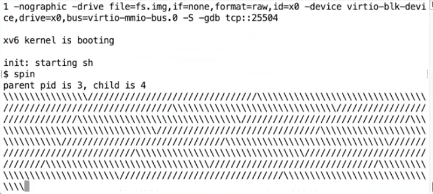
你可以看到一直有字符在输出，一个进程在输出 “/”，另一个进程在输出 ""。从输出看，虽然现在 XV6 只有一个 CPU 核，但是每隔一会，XV6 就在两个进程之间切换。“/” 输出了一会之后，定时器中断将 CPU 切换到另一个进程运行然后又输出 “\” 一会。所以在这里我们可以看到定时器中断在起作用。
# yield 和 sched 函数
在处理来自用户态的陷入的 usertrap () 函数中，有这样一句：
1 | ... |
而如果是定时器中断 devintr () 会返回 2。因此定时器中断时会触发 yield 函数。
1 | // Give up the CPU for one scheduling round. |
yield 函数只做了几件事情，它首先获取了进程的锁。实际上，在锁释放之前，进程的状态会变得不一致，例如，yield 将要将进程的状态改为 RUNABLE，表明进程并没有在运行，但是实际上这个进程还在运行，代码正在当前进程的内核线程中运行。所以这里加锁的目的之一就是：即使我们将进程的状态改为了 RUNABLE，其他的 CPU 核的调度器线程也不可能看到进程的状态为 RUNABLE 并尝试运行它。否则的话，进程就会在两个 CPU 核上运行了，而一个进程只有一个栈，这意味着两个 CPU 核在同一个栈上运行代码。
接下来 yield 函数中将进程的状态改为 RUNABLE。这里的意思是，当前进程要出让 CPU，并切换到调度器线程。当前进程的状态是 RUNABLE 意味着它还会再次运行，因为毕竟现在是一个定时器中断打断了当前正在运行的进程。
之后 yield 函数中调用了位于 proc.c 文件中的 sched 函数。我们进入到 sched 函数中，
1 | void sched(void){ |
可以看出，sched 函数基本没有干任何事情，只是做了一些合理性检查，如果发现异常就 panic。为什么会有这么多检查？因为这里的 XV6 代码已经有很多年的历史了，这些代码经历过各种各样的 bug，相应的这里就有各种各样的合理性检查和 panic 来避免可能的 bug。我将跳过所有的检查，直接走到位于底部的 swtch 函数。
# swtch 函数（区别于关键字 switch）
swtch 函数会将当前的内核线程的寄存器保存到 p->context 中。swtch 函数的另一个参数 c->context，c 表示当前 CPU 的结构体。CPU 结构体中的 context 保存了当前 CPU 核的调度器线程的寄存器。所以 swtch 函数在保存完当前内核线程的内核寄存器之后，就会恢复当前 CPU 核的调度器线程的寄存器，并继续执行当前 CPU 核的调度器线程。
1 | swtch: |
首先，ra 寄存器被保存在了 a0 寄存器指向的地址。a0 寄存器对应了 swtch 函数的第一个参数，从前面可以看出这是当前线程的 context 对象地址 ；a1 寄存器对应了 swtch 函数的第二个参数，从前面可以看出这是即将要切换到的调度器线程的 context 对象地址。
所以函数中上半部分是将当前的寄存器保存在当前线程对应的 context 对象中，函数的下半部分是将调度器线程的寄存器，也就是我们将要切换到的线程的寄存器恢复到 CPU 的寄存器中。之后函数就返回了。所以调度器线程的 ra 寄存器的内容才显得有趣，因为它指向的是 swtch 函数返回的地址，也就是 scheduler 函数。
这里有个有趣的问题，或许你们已经注意到了。swtch 函数的上半部分保存了 ra，sp 等等寄存器，但是并没有保存程序计数器 pc（Program Counter），为什么会这样呢？
Q：为什么不保存 PC 寄存器？
A：因为程序计数器不管怎样都会随着函数调用更新。它没有有效信息。我们现在知道我们在 swtch 函数中执行，所以保存程序计数器并没有意义。但是我们关心的是我们是从哪调用进到 swtch 函数的，因为当我们通过 switch 恢复执行当前线程并且从 swtch 函数返回时，我们希望能够从调用点继续执行。ra 寄存器保存了 swtch 函数的调用点，所以这里保存的是 ra 寄存器。
Q：为什么 RISC-V 中有 32 个寄存器，但是 swtch 函数中只保存并恢复了 14 个寄存器？
A：因为 switch 是按照一个普通函数来调用的，对于有些寄存器，swtch 函数的调用者默认 swtch 函数会做修改，所以调用者已经在自己的栈上保存了这些寄存器，当函数返回时，这些寄存器会自动恢复。所以 swtch 函数里只需要保存 Callee Saved Register 就行。
现在，我们其实已经在调度器线程中了，这里寄存器的值与上次打印的已经完全不一样了。虽然我们还在 swtch 函数中，但是现在我们实际上位于调度器线程调用的 swtch 函数中。调度器线程在启动过程中调用的也是 swtch 函数。接下来通过执行 ret 指令，我们就可以返回到调度器线程中。
# 线程调度器 Scheduler
1 | // Per-CPU process scheduler. |
CPU 在启动后就会调用这个线程调度器 scheduler 函数。它是个死循环，总会找到一个可以运行的进程去运行，然后如果触发了定时器中断再去切换进程（swtch）
现在我们正运行在 CPU 拥有的调度器线程中，并且我们正好在之前调用 swtch 函数的返回状态。之前调度器线程调用 switch 是因为想要运行 pid 为 3 的进程，也就是刚刚被中断的 spin 程序。
虽然 pid 为 3 的 spin 进程也调用了 swtch 函数，但是那个 switch 并不是当前返回的这个 switch。spin 进程调用的 swtch 函数还没有返回，而是保存在了 pid 为 3 的栈和 context 对象中。现在返回的是之前调度器线程对于 swtch 函数的调用。
# Lecture 13
# Sleep&Wake up 接口
为什么需要 Sleep 和 Wakeup？—— 为了 Coordination 协调
譬如写入一个字符，硬件速度远慢于软件，所以我们选择在进程写入字符后让它 sleep，直到硬件那边写完了并触发中断时，再将这个进程唤醒。
因此，sleep 和 wakeup 就是为了解决如下问题成对出现的：为了资源充分利用，有时候进程 A 需要休眠，直到特定条件被满足时再让它唤醒继续运行。
然而不精巧的 sleep 设计会导致进程 sleep 后永远不会被唤醒，即 Lost Wakeup 问题。
锁可以使得线程本身不必关心其他线程的具体实现。我们为共享的数据增加锁，这样就不用担心其他线程也使用了相同的数据，因为锁可以确保对于数据的操作是依次发生的。
当你在写一个线程的代码时，有些场景需要等待一些特定的事件，或者不同的线程之间需要交互：
- 假设我们有一个 Pipe，并且我正在从 Pipe 中读数据。但是 Pipe 当前又没有数据，所以我需要等待一个 Pipe 非空的事件。
- 类似的，假设我在读取磁盘，我会告诉磁盘控制器请读取磁盘上的特定块。这或许要花费较长的时间，尤其当磁碟需要旋转时（通常是毫秒级别），磁盘才能完成读取。而执行读磁盘的进程需要等待读磁盘结束的事件。
- 类似的，一个 Unix 进程可以调用
wait函数。这个会使得调用进程等待任何一个子进程退出。所以这里父进程有意的在等待另一个进程产生的事件。
以上就是进程需要等待特定事件的一些例子。特定事件可能来自于 I/O，也可能来自于另一个进程，并且它描述了某件事情已经发生。Coordination 是帮助我们解决这些问题并帮助我们实现这些需求的工具。Coordination 是非常基础的工具，就像锁一样，在实现线程代码时它会一直出现。
我们怎么能让进程或者线程等待一些特定的事件呢？一种非常直观的方法是通过循环实现 busy-wait。假设我们想从一个 Pipe 读取数据，我们就写一个循环一直等待 Pipe 的 buffer 不为空。
实际中会有这样的代码：
-
如果你知道你要等待的事件极有可能在 0.1 微秒内发生，通过循环等待或许是最好的实现方式。通常来说在操作设备硬件的代码中会采用这样的等待方式，如果你要求一个硬件完成一个任务，并且你知道硬件总是能非常快的完成任务，这时通过一个类似的循环等待或许是最正确的方式。
-
另一方面，事件可能需要数个毫秒甚至你都不知道事件要多久才能发生，或许要 10 分钟其他的进程才能向 Pipe 写入数据，那么我们就不想在这一直循环并且浪费本可以用来完成其他任务的 CPU 时间。这时我们想要通过类似 switch 函数调用的方式出让 CPU，并在我们关心的事件发生时重新获取 CPU。Coordination 就是有关出让 CPU，直到等待的事件发生再恢复执行。人们发明了很多不同的 Coordination 的实现方式，但是与许多 Unix 风格操作系统一样，XV6 使用的是 Sleep&Wakeup 这种方式。
再次考虑 UART 读写字符时的操作，XV6 总是会从 write 系统调用调用到 uartwrite () 函数从 console 中读写字符。
1 | void uartwrite(char buf[], int n){ |
这个函数会在循环中将 buf 中的字符一个一个的向 UART 硬件写入。这是一种经典的设备驱动实现风格，你可以在很多设备驱动中看到类似的代码。
你可以向 UART 硬件写入一个字符，并等待 UART 硬件说：好的我完成了传输上一个字符并且准备好了传输下一个字符，之后驱动程序才可以写入下一个字符。因为这里的硬件可能会非常慢，或许每秒只能传输 1000 个字符，所以我们在两个字符之间的等待时间可能会很长。而 1 毫秒在现在计算机上是一个非常非常长的时间，它可能包含了数百万条指令时间，所以我们不想通过循环来等待 UART 完成字符传输，我们想通过一个更好的方式来等待。如大多数操作系统一样，XV6 也的确存在更好的等待方式。
UART 硬件会在完成传输一个字符后，触发一个中断。所以 UART 驱动中除了 uartwrite 函数外，还有名为 uartintr 的中断处理程序。这个中断处理程序会在 UART 硬件触发中断时由 trap.c 代码调用。
中断处理程序会在最开始读取 UART 对应的 memory mapped register，并检查其中表明传输完成的相应的标志位，也就是 LSR_TX_IDLE 标志位。如果这个标志位为 1，代码会将 tx_done 设置为 1，并调用 wakeup 函数。这个函数会使得 uartwrite 中的 sleep 函数恢复执行，并尝试发送一个新的字符。
所以这里的机制是，如果一个线程需要等待某些事件，比如说等待 UART 硬件愿意接收一个新的字符，线程调用 sleep 函数并等待一个特定的条件。当特定的条件满足时，代码会调用 wakeup 函数。这里的 sleep 函数和 wakeup 函数是成对出现的。我们之后会看 sleep 函数的具体实现，它会做很多事情最后再调用 switch 函数来出让 CPU。
这里有件事情需要注意， sleep 和 wakeup 函数需要通过某种方式链接到一起。也就是说，如果我们调用 wakeup 函数，我们只想唤醒正在等待刚刚发生的特定事件的线程。所以， sleep 函数和 wakeup 函数都带有一个叫做 sleep channel 的参数。我们在调用 wakeup 的时候，需要传入与调用 sleep 函数相同的 sleep channel 。不过 sleep 和 wakeup 函数只是接收表示了 sleep channel 的 64bit 数值，它们并不关心这个数值代表什么。当我们调用 sleep 函数时，我们通过一个 sleep channel 表明我们等待的特定事件，当调用 wakeup 时我们希望能传入相同的数值来表明想唤醒哪个线程。
# Lost Wakeup
假设 sleep 只是接收任意的 sleep channel 作为唯一的参数。它其实不能正常工作，我们称这个 sleep 实现为 broken_sleep 。这一节就介绍 broken_sleep 为啥不行。
你可以想象一个 sleep 函数内会将进程的状态设置为 SLEEPING，表明当前进程不想再运行，而是正在等待一个特定的事件。如果你们看过了 XV6 的实现，你们可以发现 sleep 函数中还会做很多其他操作。我们需要记录特定的 sleep channel 值，这样之后的 wakeup 函数才能发现是当前进程正在等待 wakeup 对应的事件。最后再调用 switch 函数出让 CPU。
如果 sleep 函数只做了这些操作，那么很明显 sleep 函数会出问题，我们需要在 sleep 里获取进程的锁。
1 | // Atomically release lock and sleep on chan. |
之后是 wakeup 函数。我们希望唤醒所有正在等待特定 sleep channel 的线程。所以 wakeup 函数中会查询进程表单中的所有进程，如果进程的状态是 SLEEPING 并且进程对应的 channel 是当前 wakeup 的参数，那么将进程的状态设置为 RUNNABLE。
1 | void |
演示一下如何在 UART 驱动中使用刚刚介绍的 sleep 和 wakeup 函数:
-
首先是定义 done 标志位。
-
之后是定义
uartwrite函数。在函数中，对于 buffer 内的每一个字符，检查 done 标志位，如果标志位为 0，就调用 sleep 函数并传入 tx_channel。之后将字符传递给 UART 并将 done 设置为 0。 -
之后是中断处理函数
uartintr。函数中首先将 done 标志位设置为 1，并调用 wakeup。
这里 uartwrite 和 uartintr 两个函数需要使用锁来协调工作。
- 第一个原因是 done 标志位，任何时候我们有了共享的数据，我们需要为这个数据加上锁。
- 另一个原因是两个函数都需要访问 UART 硬件，通常来说让两个线程并发的访问 memory mapped register 是错误的行为。
所以我们需要在两个函数中加锁来避免对于 done 标志位和硬件的竞争访问。
现在的问题是，我们该在哪个位置加锁？在中断处理程序中较为简单，我们在最开始加锁，在最后解锁。难的是如何在 uartwrite 函数中加锁。一种可能是，每次发送一个字符的过程中持有锁，所以在每一次遍历 buffer 的起始和结束位置加锁和解锁。
为什么这样肯定不能工作？一个原因是，我们能从 while not done 的循环退出的唯一可能是中断处理程序将 done 设置为 1。但是如果我们为整个代码段都加锁的话，中断处理程序就不能获取锁了，中断程序会不停 “自旋” 并等待锁释放。而锁被 uartwrite 持有，在 done 设置为 1 之前不会释放。而 done 只有在中断处理程序获取锁之后才可能设置为 1。所以我们不能在发送每个字符的整个处理流程都加锁。
所以有一个自然的解决办法就是在 uartwrite 函数中，调用 sleep 前释放锁，在 sleep 后再获取锁：
1 | void uartwrite(char buf[], int n){ |
上面代码就是这个含义。然而，一旦释放了锁，在进入 sleep 前，其他 CPU 核上执行 UART 中断的那些进程可能会先一步 acquire 到锁。然后其他 CPU 核向 UART 上写完一个字符后，将 tx_done 设为 1，然后调用 wakeup 函数。注意，此时当前进程还卡在进入 sleep 前，因此它的状态不是 SLEEPING，于是也就不会被 wakeup。
注意， uartwrite 中的操作都是先写入（WriteReg），然后把 tx_done 设为 0，然后进入 sleep 。如果在进入 sleep 前被其他进程率先写完字符，将 tx_done 设为 1 并触发 UART 中断，将不会唤醒本进程。而且本进程将永远不再被唤醒，因为 tx_done 是 1，UART 中断将无法被触发，本进程永远无法写入下一个字符。
这就是 Lost Wakeup 问题。
# 如何避免 Lost wakeup
一方面，我们需要在 tx_done 设为 1 后和进入 sleep 前释放锁（因为中断处理程序需要获取锁），另一方面，我们不希望在释放锁和进入 sleep 前留出空隙让别的进程进入。
为了实现这个目的，我们需要将 sleep 函数设计的稍微复杂点。这里的解决方法是，即使 sleep 函数不需要知道你在等待什么事件，它还是需要你知道你在等待什么数据，并且传入一个用来保护你在等待数据的锁。
sleep 后需要特定的条件才能被 wakeup，而 sleep 自己又不需要知道这个条件是什么。在我们的例子中，sleep 后被 wakeup 的特定条件是 tx_done 等于 1。虽然 sleep 不需要知道 tx_done，但是它需要知道保护这个条件的锁，也就是这里的 uart_tx_lock。在调用 sleep 的时候，锁还被当前线程持有，之后这个锁被传递给了 sleep。
即原本在进入 sleep 前就释放的 uart_tx_lock 锁，现在不再被释放，而且会被传入 sleep。
uartwrite 在最开始获取了 sleep 的 condition lock（即 uart_tx_done），并且一直持有 condition lock 直到调用 sleep 函数。所以它首先获取了 condition lock，之后检查 condition（注，也就是 tx_done 等于 0），之后在持有 condition lock 的前提下调用了 sleep 函数。此时 wakeup 不能做任何事情，wakeup 现在甚至都不能被调用直到调用者能持有 condition lock。所以现在 wakeup 必然还没有执行。
sleep 函数在释放 condition lock 之前，先获取了进程的锁。在释放了 condition lock 之后，wakeup 就可以被调用了，但是除非 wakeup 获取了进程的锁，否则 wakeup 不能查看进程的状态。所以，在 sleep 函数中释放了 condition lock 之后，wakeup 也还没有执行。
在持有进程锁的时候，将进程的状态设置为 SLEEPING 并记录 sleep channel，之后再调用 sched 函数，这个函数中会再调用 switch 函数（注，详见 11.6），此时 sleep 函数中仍然持有了进程的锁，wakeup 仍然不能做任何事情。
如果你还记得的话，当我们从当前线程切换走时，调度器线程中会释放前一个进程的锁（注，详见 11.8）。所以在调度器线程释放进程锁之后，wakeup 才能终于获取进程的锁，发现它正在 SLEEPING 状态，并唤醒它。
这里的效果是由之前定义的一些规则确保的，这些规则包括了：
- 调用 sleep 时需要持有 condition lock，这样 sleep 函数才能知道相应的锁。
- sleep 函数只有在获取到进程的锁 p->lock 之后，才能释放 condition lock。
- wakeup 需要同时持有两个锁（p->lock 当前进程的锁、wakeup 条件锁 uart_tx_done）才能查看进程。
# Pipe 中的 sleep 和 wakeup
1 | int |
这里有很多无关的代码可以忽略。当 read 系统调用最终调用到 piperead 函数时，pi->lock 会用来保护 pipe，这就是 sleep 函数对应的 condition lock。 piperead 需要等待的 condition 是 pipe 中有数据，而这个 condition 就是 pi->nwrite 大于 pi->nread，也就是写入 pipe 的字节数大于被读取的字节数。如果这个 condition 不满足，那么 piperead 会调用 sleep 函数，并等待 condition 发生。同时 piperead 会将 condition lock 也就是 pi->lock 作为参数传递给 sleep 函数，以确保不会发生 lost wakeup。
1 | int |
pipewrite 会向 pipe 的缓存写数据，并最后在 piperead 所等待的 sleep channel 上调用 wakeup。而我们想要避免这样的风险：在 piperead 函数检查发现没有字节可以读取，到 piperead 函数调用 sleep 函数之间，另一个 CPU 调用了 pipewrite 函数。因为这样的话，另一个 CPU 会向 pipe 写入数据并在 piperead 进程进入 SLEEPING 之前调用 wakeup，进而产生一次 lost wakeup。
在 pipe 的代码中， pipewrite 和 piperead 都将 sleep 包装在一个 while 循环中。 piperead 中的循环等待 pipe 的缓存为非空（pipewrite 中的循环等待的是 pipe 的缓存不为 full）。之所以要将 sleep 包装在一个循环中，是因为可能有多个进程在读取同一个 pipe。如果一个进程向 pipe 中写入了一个字节，这个进程会调用 wakeup 进而同时唤醒所有在读取同一个 pipe 的进程。
但是因为 pipe 中只有一个字节并且总是有一个进程能够先被唤醒，哦，这正好提醒了我有关 sleep 我忘记了一些非常关键的事情。sleep 函数中最后一件事情就是重新获取 condition lock。所以调用 sleep 函数的时候，需要对 condition lock 上锁（注，在 sleep 函数内部会对 condition lock 解锁），在 sleep 函数返回时会重新对 condition lock 上锁。这样第一个被唤醒的线程会持有 condition lock，而其他的线程在重新对 condition lock 上锁的时候会在锁的 acquire 函数中等待。
# 进程的退出：exit 系统调用
每个进程最终都需要退出，我们需要清除进程的状态，释放栈。在 XV6 中，一个进程如果退出的话，我们需要释放用户内存，释放 page table，释放 trapframe 对象，将进程在进程表单中标为 REUSABLE，这些都是典型的清理步骤。当进程退出或者被杀掉时，有许多东西都需要被释放。
这里会产生的两大问题：
- 首先我们不能直接单方面的摧毁另一个线程，因为：另一个线程可能正在另一个 CPU 核上运行，并使用着自己的栈；也可能另一个线程正在内核中持有了锁；也可能另一个线程正在更新一个复杂的内核数据，如果我们直接就把线程杀掉了，我们可能在线程完成更新复杂的内核数据过程中就把线程杀掉了。我们不能让这里的任何一件事情发生。
- 另一个问题是，即使一个线程调用了 exit 系统调用，并且是自己决定要退出。它仍然持有了运行代码所需要的一些资源，例如它的栈，以及它在进程表单中的位置。当它还在执行代码，它就不能释放正在使用的资源。所以我们需要一种方法让线程能释放最后几个对于运行代码来说关键的资源。
让我们先来看位于 proc.c 中的 exit 函数：
1 | void |
在最后它会释放进程的内存和 page table，关闭已经打开的文件，同时我们也知道父进程会从 wait 系统调用中唤醒，所以 exit 最终会导致父进程被唤醒。这些都是我们预期可以从 exit 代码中看到的内容。
-
从上面的代码中，首先 exit 函数关闭了所有已打开的文件。这里可能会很复杂，因为关闭文件系统中的文件涉及到引用计数，虽然我们还没学到但是这里需要大量的工作。不管怎样，一个进程调用 exit 系统调用时，会关闭所有自己拥有的文件。
-
接下来是类似的处理，进程有一个对于当前目录的记录，这个记录会随着你执行 cd 指令而改变。在 exit 过程中也需要将对这个目录的引用释放给文件系统。
-
如果一个进程要退出，但是它又有自己的子进程，接下来需要设置这些子进程的父进程为 init 进程。我们接下来会看到，每一个正在 exit 的进程，都有一个父进程中的对应的 wait 系统调用。父进程中的 wait 系统调用会完成进程退出最后的几个步骤。所以如果父进程退出了，那么子进程就不再有父进程，当它们要退出时就没有对应的父进程的 wait。所以在 exit 函数中，会为即将 exit 进程的子进程重新指定父进程为 init 进程，也就是 PID 为 1 的进程。(防止了孤儿进程)
-
之后，我们需要通过调用 wakeup 函数唤醒当前进程的父进程，当前进程的父进程或许正在等待当前进程退出。
-
接下来，进程的状态被设置为 ZOMBIE。现在进程还没有完全释放它的资源，所以它还不能被重用。所谓的进程重用是指，我们期望在最后，进程的所有状态都可以被一些其他无关的 fork 系统调用复用，但是目前我们还没有到那一步。
现在我们还没有结束，因为我们还没有释放进程资源。我们在还没有完全释放所有资源的时候，通过调用 sched 函数进入到调度器线程。
到目前位置，进程的状态是 ZOMBIE，并且进程不会再运行，因为调度器只会运行 RUNNABLE 进程。同时进程资源也并没有完全释放，如果释放了进程的状态应该是 UNUSED。但是可以肯定的是进程不会再运行了，因为它的状态是 ZOMBIE。所以调度器线程会决定运行其他的进程。
# wait 系统调用
通过 Unix 的 exit 和 wait 系统调用的说明，我们可以知道如果一个进程 exit 了，并且它的父进程调用了 wait 系统调用，父进程的 wait 会返回。wait 函数的返回表明当前进程的一个子进程退出了。所以接下来我们看一下 wait 系统调用的实现。
1 | // Wait for a child process to exit and return its pid. |
它里面包含了一个大的循环。当一个进程调用了 wait 系统调用，它会扫描进程表单，找到父进程是自己且状态是 ZOMBIE 的进程。从上一节可以知道，这些进程已经在 exit 函数中几乎要执行完了。之后由父进程调用的 freeproc 函数，来完成释放进程资源的最后几个步骤。
这是关闭一个进程的最后一些步骤。如果由正在退出的进程自己在 exit 函数中执行这些步骤，将会非常奇怪。这里释放了 trapframe，释放了 page table。如果我们需要释放进程内核栈，那么也应该在这里释放。但是因为内核栈的 guard page，我们没有必要再释放一次内核栈。不管怎样，当进程还在 exit 函数中运行时，任何这些资源在 exit 函数中释放都会很难受，所以这些资源都是由父进程释放的。
wait 不仅是为了父进程方便的知道子进程退出，wait 实际上也是进程退出的一个重要组成部分。在 Unix 中，对于每一个退出的进程，都需要有一个对应的 wait 系统调用，这就是为什么当一个进程退出时，它的子进程需要变成 init 进程的子进程。init 进程的工作就是在一个循环中不停调用 wait，因为每个进程都需要对应一个 wait，这样它的父进程才能调用 freeproc 函数，并清理进程的资源。
当父进程完成了清理进程的所有资源，子进程的状态会被设置成 UNUSED。之后，fork 系统调用才能重用进程在进程表单的位置。
# kill 系统调用
1 | int |
它先扫描进程表单，找到目标进程。然后只是将进程的 proc 结构体中 killed 标志位设置为 1。如果进程正在 SLEEPING 状态，将其设置为 RUNNABLE。这里只是将 killed 标志位设置为 1，并没有停止进程的运行。所以 kill 系统调用本身还是很温和的。
而目标进程运行到内核代码中能安全停止运行的位置时，会检查自己的 killed 标志位，如果设置为 1，目标进程会自愿的执行 exit 系统调用。你可以在 trap.c 中看到所有可以安全停止运行的位置：
1 | void |
类似的，在 usertrap 函数的最后，也有类似的代码。在执行完系统调用之后，进程会再次检查自己是否已经被 kill 了。即使进程是被中断打断，这里的检查也会被执行。例如当一个定时器中断打断了进程的运行，我们可以通过检查发现进程是 killed 状态，之后进程会调用 exit 退出。
所以 kill 系统调用并不是真正的立即停止进程的运行，它更像是这样：如果进程在用户空间，那么下一次它执行系统调用它就会退出，又或者目标进程正在执行用户代码，当时下一次定时器中断或者其他中断触发了，进程才会退出。所以从一个进程调用 kill，到另一个进程真正退出，中间可能有很明显的延时。
# Lecture 14
# 文件系统的特点
接下来让我列出一些文件系统突出的特性：
- 对于用户友好的文件名，具体来说就是层级的路径名，这可以帮助用户组织目录中的文件。
- 通过将文件命名成方便易记的名字，可以在用户之间和进程之间更简单的共享文件。
- 相比我们已经看过的 XV6 其他子系统，这一点或许是最重要的，文件系统提供了持久化。这意味着，我可以关闭一个计算机，过几天再开机而文件仍然在那，我可以继续基于文件工作。这一点与进程和其他资源不一样，这些资源在计算机重启时就会消失，之后你需要重新启动它们，但是文件系统就可以提供持久化。
所以你们都使用了文件系统，接下来几节课我们将学习它内部是如何工作的。出于以下原因，文件系统背后的机制还比较有意思：
-
文件系统对硬件的抽象较为有用，所以理解文件系统对于硬件的抽象是如何实现的还是有点意思的。
-
除此之外，还有个关键且有趣的地方就是 crash safety。有可能在文件系统的操作过程中，计算机崩溃了，在重启之后你的文件系统仍然能保持完好，文件系统的数据仍然存在，并且你可以继续使用你的大部分文件。如果文件系统操作过程中计算机崩溃了，然后你重启之后文件系统不存在了或者磁盘上的数据变了，那么崩溃的将会是你。所以 crash safety 是一个非常重要且经常出现的话题，我们下节课会专门介绍它。
-
之后是一个通用的问题，如何在磁盘上排布文件系统。例如目录和文件，它们都需要以某种形式在磁盘上存在，这样当你重启计算机时，所有的数据都能恢复。所以在磁盘上有一些数据结构表示了文件系统的结构和内容。在 XV6 中，使用的数据结构非常简单，因为 XV6 是专门为教学目的创建的。真实的文件系统通常会更加复杂。但是它们都是磁盘上保存的数据结构，我们在今天的课程会重点看这部分。
-
最后一个有趣的话题是性能。文件系统所在的硬件设备通常都较慢，比如说向一个 SSD 磁盘写数据将会是毫秒级别的操作，而在一个毫秒内，计算机可以做大量的工作，所以尽量避免写磁盘很重要，我们将在几个地方看到提升性能的代码。比如说，所有的文件系统都有 buffer cache 或者叫 block cache。同时这里会有更多的并发，比如说你正在查找文件路径名，这是一个多次交互的操作，首先要找到文件结构，然后查找一个目录的文件名，之后再去查找下一个目录等等。你会期望当一个进程在做路径名查找时，另一个进程可以并行的运行。这样的并行运行在文件系统中将会是一个大的话题。
# 文件系统的实现
考虑系统调用：
1 | fd = open("x/y", _); |
上面的系统调用会创建文件，并返回文件描述符给调用者。调用者也就是用户应用程序可以对文件描述符调用 write，有关 write 我们在之前已经看过很多次了，这里我们向文件写入 “abc” 三个字符：
1 | write(fd, "abc", 3); |
从这两个调用已经可以看出一些信息了：
- 首先出现在接口中的路径名是可读的名字，而不是一串数字，它是由用户选择的字符串。
- write 系统调用并没有使用 offset 作为参数，所以写入到文件的哪个位置是隐式包含在文件系统中，文件系统在某个位置必然保存了文件的 offset。因为如果你再调用 write 系统调用，新写入的数据会从第 4 个字节开始。（自动帮你在文件尾部输入）
除此之外，还有一些我们之前没有看过的有趣的系统调用。例如 XV6 和所有的 Unix 文件系统都支持通过系统调用创建链接，给同一个文件指定多个名字。你可以通过调用 link 系统调用，为之前创建的文件 “x/y” 创建另一个名字 “x/z”：
1 | link("x/y", "x/z"); |
所以文件系统内部需要以某种方式跟踪指向同一个文件的多个文件名。
我们还可能会在文件打开时，删除或者更新文件的命名空间。例如，用户可以通过 unlink 系统调用来删除特定的文件名。如果此时相应的文件描述符还是打开的状态，那我们还可以向文件写数据，并且这也能正常工作：
1 | unlink("x/y"); |
所以，在文件系统内部，文件描述符必然与某个对象关联，而这个对象不依赖文件名。这样，即使文件名变化了，文件描述符仍然能够指向或者引用相同的文件对象。所以，实际上操作系统内部需要对于文件有内部的表现形式，并且这种表现形式与文件名无关。
接下来我们看一下文件系统的结构。
首先，最重要的可能就是 inode ，这是代表一个文件的对象，并且它不依赖于文件名。实际上， inode 是通过自身的编号来进行区分的，这里的编号就是个整数。所以文件系统内部通过一个数字，而不是通过文件路径名引用 inode 。同时，基于之前的讨论， inode 必须有一个 link count 来跟踪指向这个 inode 的文件名的数量。一个文件（ inode ）只能在 link count 为 0 的时候被删除。实际的过程可能会更加复杂，实际中还有一个 openfd count，也就是当前打开了文件的文件描述符计数。一个文件只能在这两个计数器都为 0 的时候才能被删除。
同时基于之前的讨论，我们也知道 write 和 read 都没有针对文件的 offset 参数，所以文件描述符（file descriptor, fd）必然自己悄悄维护了对于文件的 offset。(可以认为是文件大小)
文件系统中核心的数据结构就是 inode 和 file descriptor 。后者主要与用户进程进行交互。
尽管文件系统的 API 很相近并且内部实现可能非常不一样。但是很多文件系统都有类似的结构。因为文件系统还挺复杂的，所以最好按照分层的方式进行理解。可以这样看：
- 在最底层是磁盘，也就是一些实际保存数据的存储设备，正是这些设备提供了持久化存储。
- 在这之上是 buffer cache 或者说 block cache，这些 cache 可以避免频繁的读写磁盘。这里我们将磁盘中的数据保存在了内存中。
- 为了保证持久性，再往上通常会有一个 logging 层。许多文件系统都有某种形式的 logging，我们下节课会讨论这部分内容，所以今天我就跳过它的介绍。
- 在 logging 层之上，XV6 有 inode cache，这主要是为了同步（synchronization），我们稍后会介绍。inode 通常小于一个 disk block，所以多个 inode 通常会打包存储在一个 disk block 中。为了向单个 inode 提供同步操作，XV6 维护了 inode cache。
- 再往上就是 inode 本身了。它实现了 read/write。
- 再往上，就是文件名，和文件描述符操作。
# 文件系统的最底层 —— 存储设备
接下来，我将简单的介绍最底层，也即是存储设备。实际中有非常非常多不同类型的存储设备，这些设备的区别在于性能，容量，数据保存的期限等。其中两种最常见，并且你们应该也挺熟悉的是 SSD 和 HDD。这两类存储虽然有着不同的性能，但是都在合理的成本上提供了大量的存储空间。SSD 通常是 0.1 到 1 毫秒的访问时间，而 HDD 通常是在 10 毫秒量级完成读写一个 disk block。
这里有些术语有点让人困惑，它们是 sectors 和 blocks。
- sector 通常是磁盘驱动可以读写的最小单元，它过去通常是 512 字节。
- block 通常是操作系统或者文件系统视角的数据。它由文件系统定义，在 XV6 中它是 1024 字节。所以 XV6 中一个 block 对应两个 sector。通常来说一个 block 对应了一个或者多个 sector。
有的时候，人们也将磁盘上的 sector 称为 block。所以这里的术语也不是很精确。
这些存储设备连接到了电脑总线之上，总线也连接了 CPU 和内存。一个文件系统运行在 CPU 上，将内部的数据存储在内存，同时也会以读写 block 的形式存储在 SSD 或者 HDD。这里的接口还是挺简单的，包括了 read/write，然后以 block 编号作为参数。虽然我们这里描述的过于简单了，但是实际的接口大概就是这样。
在内部，SSD 和 HDD 工作方式完全不一样，但是对于硬件的抽象屏蔽了这些差异。磁盘驱动通常会使用一些标准的协议，例如 PCIE，与磁盘交互。从上向下看磁盘驱动的接口，大部分的磁盘看起来都一样，你可以提供 block 编号，在驱动中通过写设备的控制寄存器，然后设备就会完成相应的工作。这是从一个文件系统的角度的描述。尽管不同的存储设备有着非常不一样的属性，从驱动的角度来看，你可以以大致相同的方式对它们进行编程。
从文件系统的角度来看磁盘还是很直观的。因为对于磁盘就是读写 block 或者 sector，我们可以将磁盘看作是一个巨大的 block 的数组，数组从 0 开始，一直增长到磁盘的最后。
而文件系统的工作就是将所有的数据结构以一种能够在重启之后重新构建文件系统的方式，存放在磁盘上。虽然有不同的方式，但是 XV6 使用了一种非常简单，但是还挺常见的布局结构。通常来说：
- block0 要么没有用，要么被用作 boot sector 来启动操作系统。
- block1 通常被称为 super block，它描述了文件系统。它可能包含磁盘上有多少个 block 共同构成了文件系统这样的信息。我们之后会看到 XV6 在里面会存更多的信息，你可以通过 block1 构造出大部分的文件系统信息。
- 在 XV6 中，log 从 block2 开始，到 block32 结束。实际上 log 的大小可能不同，这里在 super block 中会定义 log 就是 30 个 block。
- 接下来在 block32 到 block45 之间，XV6 存储了
inode。多个inode会打包存在一个 block 中，一个inode是 64 字节。 - 之后是 bitmap block，这是我们构建文件系统的默认方法，它只占据一个 block。它记录了数据 block 是否空闲。
- 之后就全是数据 block 了，数据 block 存储了文件的内容和目录的内容。
通常来说，bitmap block，inode blocks 和 log blocks 被统称为 metadata block。它们虽然不存储实际的数据，但是它们存储了能帮助文件系统完成工作的元数据。
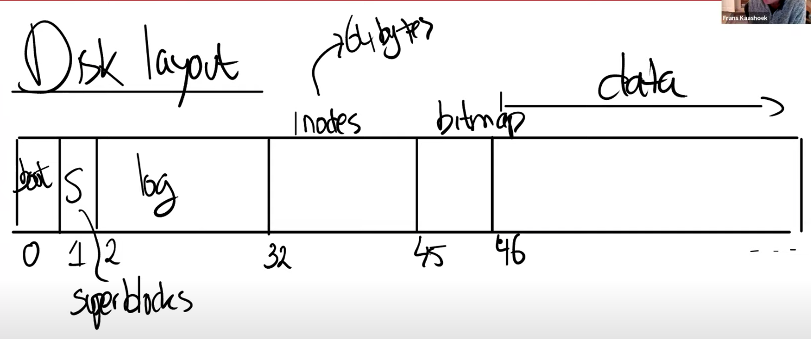
假设 inode 是 64 字节，如果你想要读取 inode10，那么你应该按照下面的公式去对应的 block 读取 inode : 。
以 inode0 在 block32，inode17 会在 block33。只要有 inode 的编号，我们总是可以找到 inode 在磁盘上存储的位置。
# inode
接下来我们看一下磁盘上存储的 inode 究竟是什么？首先我们前面已经看过了，这是一个 64 字节的数据结构：
-
通常来说它有一个 type 字段，表明 inode 是文件还是目录。
-
nlink 字段，也就是 link 计数器，用来跟踪究竟有多少文件名指向了当前的 inode。
-
size 字段，表明了文件数据有多少个字节。
-
不同文件系统中的表达方式可能不一样，不过在 XV6 中接下来是一些 block 的编号，例如编号 0，编号 1，等等。XV6 的
inode中总共有 12 个 block 编号。这些被称为 direct block number。这 12 个 block 编号指向了构成文件的前 12 个 block。举个例子，如果文件只有 2 个字节，那么只会有一个 block 编号 0，它包含的数字是磁盘上文件前 2 个字节的 block 的位置。 -
之后还有一个 indirect block number，它对应了磁盘上一个 block，这个 block 包含了 256 个 block number，这 256 个 block number 包含了文件的数据。所以
inode中 block number 0 到 block number 11 都是 direct block number，而 block number 12 保存的 indirect block number 指向了另一个 block。（注：一个 block 是 1024 字节，一个 block 编号是 4 个字节，所以一个 block 可以存 256 个 block 编号。此外，磁盘最大是 2^32*1024 字节 = 4TB。）
Q：基于上面的内容，XV6 中文件最大的长度是多少呢？
A：（256+12）*1024 字节 = 268KB，12 个 direct block+1 个 indirect block（=256 blocks）
为了扩展文件大小，可以用类似 page table 的方式，构建一个双重 indirect block number 指向一个 block，这个 block 中再包含了 256 个 indirect block number，每一个又指向了包含 256 个 block number 的 block。这样的话，最大的文件长度会大得多（变成了B）。这里修改了 inode 的数据结构，你可以使用类似 page table 的树状结构，也可以按照 B 树或者其他更复杂的树结构实现。XV6 这里极其简单，基本是按照最早的 Uinx 实现方式来的，不过你可以实现更复杂的结构。
接下来，我们想要实现 read 系统调用。假设我们需要读取文件的第 8000 个字节，那么你该读取哪个 block 呢？从 inode 的数据结构中该如何计算呢？
对于 8000，我们首先除以 1024，也就是 block 的大小，得到大概是 7。这意味着第 7 个 block 就包含了第 8000 个字节。所以直接在
inode的 direct block number 中，就包含了第 8000 个字节的 block。为了找到这个字节在第 7 个 block 的哪个位置，我们需要用 8000 对 1024 求余数，结果是 832。所以为了读取文件的第 8000 个字节，文件系统查看inode，先用 8000 除以 1024 得到 block number，然后再用 8000 对 1024 求余读取 block 中对应的字节。
总结一下， inode 中的信息完全足够用来实现 read/write 系统调用，至少可以找到哪个 disk block 需要用来执行 read/write 系统调用。
接下来我们讨论一下目录（directory）。文件系统的酷炫特性就是层次化的命名空间（hierarchical namespace），你可以在文件系统中保存对用户友好的文件名。大部分 Unix 文件系统有趣的点在于，一个目录本质上是一个文件加上一些文件系统能够理解的结构。(可以理解为，文件的话通过 inode 找到的存在 block 里的内容是文件的内容，而目录找到的存在 block 里的内容是一些 directory entries）在 XV6 中，这里的结构极其简单。每一个目录包含了 directory entries，每一条 entry 都有固定的格式
- 前 2 个字节包含了目录中文件或者子目录的
inode编号（通过inode编号，可以找到对应的 block，再找到 block 里存的真实的inode的内容） - 接下来的 14 个字节包含了文件或者子目录名
所以每个 entry 总共是 16 个字节。
对于实现路径名查找，这里的信息就足够了。假设我们要查找路径名 “/y/x”，我们该怎么做呢？
从路径名我们知道，应该从
root inode开始查找。通常root inode会有固定的inode编号，在 XV6 中，这个编号是 1。我们该如何根据编号找到root inode呢？从前一节我们可以知道，inode从 block 32 开始，如果是 inode1，那么必然在 block 32 中的 64 到 128 字节的位置。所以文件系统可以直接读到root inode的内容。对于路径名查找程序，接下来就是扫描
root inode包含的所有 block (direct+indirect)，以找到 “y”。该怎么找到root inode所有对应的 block 呢？根据前一节的内容就是读取所有的 direct block number 和 indirect block number。
很明现，这里的结构不是很有效。为了找到一个目录名，你需要线性扫描。实际的文件系统会使用更复杂的数据结构来使得查找更快，当然这又是设计数据结构的问题，而不是设计操作系统的问题。你可以使用你喜欢的数据结构并提升性能。出于简单和更容易解释的目的，XV6 使用了这里这种非常简单的数据结构。
# 文件写入的过程
如果在根目录下执行：
1 | echo "hi" > x |
这里会有几个阶段：
- 第一阶段是创建文件
- 第二阶段将 “hi” 写入文件
- 第三阶段将 “\n” 换行符写入到文件
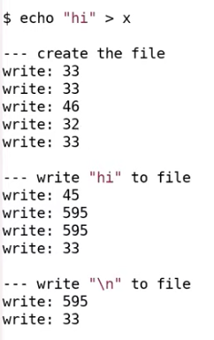
第一阶段，首先访问了两次 33 号 block。看起来给我们分配的 inode 位于 block 33。之所以有两个 write 33，第一个是为了标记 inode 将要被使用， inode 中的 type 字段来标识 inode 是否空闲，这个字段同时也会用来表示 inode 是一个文件还是一个目录。所以这里将 inode 的 type 从空闲改成了文件，并写入磁盘表示这个 inode 已经被使用了。第二个 write 33 就是实际的写入 inode 的内容。 inode 的内容会包含 linkcount 为 1 以及其他内容。
write 46 是向第一个 data block 写数据，因为我们正在向根目录创建文件，所以这个 46 号 block 是根目录存放 directory entries 的地方。这里我们向根目录增加了一个新的 entry，其中包含了文件名 x，以及我们刚刚分配的 inode 编号。
接下来的 write 32 又是什么意思呢？block 32 保存的是根目录的 inode ，那么 inode 中的什么发生了变化使得需要将更新后的 inode 写入磁盘？是的，根目录的大小变了，因为我们刚刚添加了 16 个字节的 entry 来代表文件 x 的信息。
最后又有一次 write 33，我在稍后会介绍这次写入的内容，这里我们再次更新了文件 x 的 inode ， 尽管我们又还没有写入任何数据。
第二阶段是向文件写入 “hi”。
首先是 write 45，这是更新 bitmap。文件系统首先会扫描 bitmap 来找到一个还没有使用的 data block，未被使用的 data block 对应 bit 0。找到之后，文件系统需要将该 bit 设置为 1，表示对应的 data block 已经被使用了。所以更新 block 45 是为了更新 bitmap。
接下来的两次 write 595 表明，文件系统挑选了 data block 595（bitmap 表示 595 为空）。所以在文件 x 的 inode 中，第一个 direct block number 是 595。因为写入了两个字符，所以 write 595 被调用了两次。
第二阶段最后的 write 33 是更新文件 x 对应的 inode 中的 size 字段，因为现在文件 x 中有了两个字符。
第三阶段类似第二阶段。
这里做个总结，创建新文件时，需要创建新文件的 inode （在这个例子中在 block 33），也需要给新文件 inode 里的 direct/indirect block number 创建对应的 data block（这里需要通过查询和修改 bitmap block，在这个例子中得到了 block 595），最后还需要改父目录的 inode （在这个例子中是存在 block 32 中的 inode1，即根目录）。
# 创建 inode 的代码
在 sys_open 函数中，会调用 create 函数：
1 | static struct inode* |
create 函数中首先会解析路径名并找到最后一个目录，之后会查看文件是否存在，如果存在的话会返回错误。之后就会调用 ialloc（inode allocate），这个函数会为文件 x 分配 inode。ialloc 函数位于 fs.c 文件中：
1 | struct inode* |
它会遍历所有可能的 inode 编号，找到 inode 所在的 block，再看位于 block 中的 inode 数据的 type 字段。如果这是一个空闲的 inode ，那么将其 type 字段设置为文件，这会将 inode 标记为已被分配。函数中的 log_write 就是我们之前看到在 console 中有关写 block 的输出。这里的 log_write 是我们看到的整个输出的第一个。
如果有多个进程同时调用 create 函数会发生什么？对于一个多核的计算机，进程可能并行运行，两个进程可能同时会调用到 ialloc 函数，然后进而调用 bread（block read）函数。所以必须要有一些机制确保这两个进程不会互相影响。
让我们看一下位于 bio.c 的 buffer cache 代码。首先看一下 bread 函数
1 | struct buf { |
bread 函数首先会调用 bget 函数，bget 会为我们从 buffer cache 中找到 block 的缓存。让我们看一下 bget 函数:
1 | static struct buf* |
这里遍历了 linked-list，来看看现有的 cache 是否符合要找的 block。
我们这里看一下 block 33 的 cache 是否存在，如果存在的话，将 block 对象的引用计数（refcnt）加 1，之后再释放 bcache 锁，因为现在我们已经完成了对于 cache 的检查并找到了 block cache。之后，代码会尝试获取 block cache 的锁。
所以，如果有多个进程同时调用 bget 的话，其中一个可以获取 bcache 的锁并扫描 buffer cache。此时，其他进程是没有办法修改 buffer cache 的（注：因为 bacche 的锁被占住了）。
之后，进程会查找 block number 是否在 cache 中，如果在的话将 block cache 的引用计数加 1，表明当前进程对 block cache 有引用，之后再释放 bcache 的锁。如果有第二个进程也想扫描 buffer cache，那么这时它就可以获取 bcache 的锁。假设第二个进程也要获取 block 33 的 cache，那么它也会对相应的 block cache 的引用计数加 1。最后这两个进程都会尝试对 block 33 的 block cache 调用 acquiresleep 函数。
acquiresleep 是另一种锁，我们称之为 sleep lock ，本质上来说它获取 block 33 cache 的锁。其中一个进程获取锁之后函数返回。在 ialloc 函数中会扫描 block 33 中是否有一个空闲的 inode。而另一个进程会在 acquiresleep 中等待第一个进程释放锁。
如果 buffer cache 中有两份 block 33 将会出现问题。假设一个进程要更新 inode19，另一个进程要更新 inode20。如果它们都在处理 cache 中的 block 33，并且有两份 block 33，那么第一个进程可能持有一份 cache 并先将 inode19 写回到磁盘中，而另一个进程持有另一份 cache 会将 inode20 写回到磁盘中，并将 inode19 的更新覆盖掉。所以一个 block 只能在 buffer cache 中出现一次。
# Sleep lock
block cache 使用的是 sleep lock。sleep lock 区别于一个常规的 spinlock。我们先看来一下 sleep lock。
1 | void |
首先是 acquiresleep 函数，它用来获取 sleep lock。函数里首先获取了一个普通的 spinlock，这是与 sleep lock 关联在一起的一个锁。之后，如果 sleep lock 被持有，那么就进入 sleep 状态，并将自己从当前 CPU 调度开。
既然 sleep lock 是基于 spinlock 实现的，为什么对于 block cache，我们使用的是 sleep lock 而不是 spinlock？
这里其实有多种原因。对于 spinlock 有很多限制，其中之一是加锁时中断必须要关闭。所以如果使用 spinlock 的话，当我们对 block cache 做操作的时候需要持有锁，那么我们就永远也不能从磁盘收到数据。或许另一个 CPU 核可以收到中断并读到磁盘数据，但是如果我们只有一个 CPU 核的话，我们就永远也读不到数据了。出于同样的原因，也不能在持有 spinlock 的时候进入 sleep 状态。所以这里我们使用 sleep lock。sleep lock 的优势就是，我们可以在持有锁的时候不关闭中断。我们可以在磁盘操作的过程中持有锁，我们也可以长时间持有锁。当我们在等待 sleep lock 的时候，我们并没有让 CPU 一直空转，我们通过 sleep 将 CPU 出让出去了。
接下来让我们看一下 brelease 函数。
1 | void |
brelease 函数中首先释放了 sleep lock；之后获取了 bcache 的锁；之后减少了 block cache 的引用计数，表明一个进程不再对 block cache 感兴趣；最后如果引用计数为 0，那么它会修改 buffer cache 的 linked-list，将 block cache 移到 linked-list 的头部，这样表示这个 block cache 是最近使用过的 block cache。
这一点很重要，当我们在 bget 函数中不能找到 block cache 时，我们需要在 buffer cache 中腾出空间来存放新的 block cache，这时会使用 LRU（Least Recent Used）算法找出最不常使用的 block cache，并撤回它（注，而将刚刚使用过的 block cache 放在 linked-list 的头部就可以直接更新 linked-list 的 tail 来完成 LRU 操作）。
为什么这是一个好的策略呢？因为通常系统都遵循 temporal locality 策略，也就是说如果一个 block cache 最近被使用过，那么很有可能它很快会再被使用，所以最好不要撤回这样的 block cache。
以上就是对于 block cache 代码的介绍。这里有几件事情需要注意：
- 首先在内存中，对于一个 block 只能有一份缓存。这是 block cache 必须维护的特性。
- 其次，这里使用了与之前的 spinlock 略微不同的 sleep lock。与 spinlock 不同的是，可以在 I/O 操作的过程中持有 sleep lock。
- 第三，它采用了 LRU 作为 cache 替换策略。
- 第四，它有两层锁。第一层锁用来保护 buffer cache 的内部数据（bcashe 里的）；第二层锁也就是 sleep lock（bcashe 里的每个 buf 里的锁）用来保护单个 block 的 cache。
总结：
- 首先，文件系统是一个位于磁盘的数据结构。我们今天的主要时间都用来介绍这个位于磁盘的数据结构的内容。XV6 的这个数据结构实现的很简单，但是你可以实现一个更加复杂的数据结构。
- 其次，我们花了一些时间来看 block cache 的实现，这对于性能来说是至关重要的，因为读写磁盘是代价较高的操作，可能要消耗数百毫秒，而 block cache 确保了如果我们最近从磁盘读取了一个 block，那么我们将不会再从磁盘读取相同的 block。
# Lecture 15
# File system crash 问题
当你在运行 make 指令时，make 与文件系统会有频繁的交互，并读写文件，但是在 make 执行的过程中断电了，可能是你的笔记本电脑没电了，也可能就是停电了，之后电力恢复之后，你重启电脑并运行 ls 指令，你会期望你的文件系统仍然在一个好的可用的状态。
这里我们关心的 crash 或者故障包括了：
- 在文件系统操作过程中的电力故障；
- 在文件系统操作过程中的内核 panic。包括 XV6 在内的大部分内核都会 panic，panic 可能是由内核 bug 引起，它会突然导致你的系统故障，但是你肯定期望能够在重启之后还能使用文件系统。
我们上节课看过了如何创建一个文件，这里主要的两个步骤是：
- 分配 inode，或者在磁盘上将 inode 标记为已分配
- 之后更新包含了新文件的目录的 data block
如果在这两个步骤之间，操作系统 crash 了。这时可能会使得文件系统的属性被破坏。这里的属性是指，每一个磁盘 block 要么是空闲的，要么是只分配给了一个文件。即使故障出现在磁盘操作的过程中，我们期望这个属性仍然能够保持。如果这个属性被破坏了，那么重启系统之后程序可能会运行出错，比如：
- 操作系统可能又立刻 crash 了，因为文件系统中的一些数据结构现在可能处于一种文件系统无法处理的状态。
- 或者，更可能的是操作系统没有 crash，但是数据丢失了或者读写了错误的数据。
# File system crash 实例
首先回顾下磁盘上 block 的分布：

在 super block 之后就是 log block，我们今天主要介绍的就是 log block。log block 之后是 inode block，每个 block 可能包含了多个 inode。之后是 bitmap block，它记录了哪个 data block 是空闲的。最后是 data block，这里包含了文件系统的实际数据。
上节课介绍的创建文件的步骤详细点，分为：
- 首先是分配 inode，因为首先写的是 block 33
- 之后 inode 被初始化，然后又写了一次 block 33
- 之后是写 block 46，是将文件 x 的 inode 编号写入到 x 所在目录的 inode 的 data block 中
- 之后是更新 root inode，因为文件 x 创建在根目录，所以需要更新根目录的 inode 的 size 字段，以包含这里新创建的文件 x
- 最后再次更新了文件 x 的 inode
现在我们想知道，哪里可能出错。假设我们在初始化 inode 后出现了电力故障或者内核崩溃。
在出现电力故障之后，因为内存数据保存在 RAM 中，所有的内存数据都丢失了。所有的进程数据，所有的文件描述符，内存中所有的缓存都没有了，因为内存数据不是持久化的。我们唯一剩下的就是磁盘上的数据，因为磁盘的介质是持久化的，所以只有磁盘上的数据能够在电力故障之后存活。基于这些事实，如果我们在上面的位置出现故障，并且没有额外的机制，没有 logging，会有多糟糕呢？我们这里会有什么风险？
在这个位置，我们先写了 block 33 表明 inode 已被使用，之后出现了电力故障，然后计算机又重启了。这时，我们丢失了刚刚分配给文件 x 的 inode。这个 inode 虽然被标记为已被分配，但是它并没有放到任何目录中，所以也就没有出现在任何目录中，因此我们也就没办法删除这个 inode。所以在这个位置发生电力故障会导致我们丢失 inode。
# File system logging
我们这节课要讨论的针对文件系统 crash 之后的问题的解决方案，其实就是 logging。这是来自于数据库的一种解决方案。它有一些好的属性：
- 首先，它可以确保文件系统的系统调用是原子性的。比如你调用 create/write 系统调用，这些系统调用的效果是要么完全出现，要么完全不出现，这样就避免了一个系统调用只有部分写磁盘操作出现在磁盘上。
- 其次，它支持快速恢复（Fast Recovery）。在重启之后，我们不需要做大量的工作来修复文件系统，只需要非常小的工作量。这里的快速是相比另一个解决方案来说，在另一个解决方案中，你可能需要读取文件系统的所有 block，读取 inode，bitmap block，并检查文件系统是否还在一个正确的状态，再来修复。而 logging 可以有快速恢复的属性。
logging 的基本思想还是很直观的:
-
log write
首先，你将磁盘分割成两个部分，其中一个部分是 log，另一个部分是文件系统，文件系统可能会比 log 大得多。
当需要更新文件系统时，我们并不是更新文件系统本身。假设我们在内存中缓存了 bitmap block，也就是 block 45。当需要更新 bitmap 时，我们并不是直接写 block 45，而是将数据写入到 log 中，并记录这个更新应该写入到 block 45。对于所有的写 block 都会有相同的操作，例如更新 inode，也会记录一条写 block 33 的 log。
所以基本上，任何一次写操作都是先写入到 log，我们并不是直接写入到 block 所在的位置，而总是先将写操作写入到 log 中。
-
commit op
之后在某个时间，当文件系统的操作结束了，比如说我们前一节看到的 4-5 个写 block 操作都结束，并且都存在于 log 中，我们会 commit 文件系统的操作。这意味着我们需要在 log 的某个位置记录属于同一个文件系统的操作的个数，例如 5。
-
install log
我们在 log 中存储了所有写 block 的内容时，如果我们要真正执行这些操作，只需要将 block 从 log 分区移到文件系统分区。我们知道第一个操作该写入到 block 45，我们会直接将数据从 log 写到 block45，第二个操作该写入到 block 33，我们会将它写入到 block 33，依次类推。
-
clean log
一旦完成了，就可以清除 log。清除 log 实际上就是将属于同一个文件系统的操作的个数设置为 0。
以上就是 log 的基本工作方式。为什么这样的工作方式是好的呢？假设我们 crash 并重启了。在重启的时候，文件系统会查看 log 的 commit 记录值，如果是 0 的话，那么什么也不做。如果大于 0 的话，我们就知道 log 中存储的 block 需要被写入到文件系统中，很明显我们在 crash 的时候并不一定完成了 install log，我们可能是在 commit 之后，clean log 之前 crash 的。所以这个时候我们需要做的就是 reinstall（注，也就是将 log 中的 block 再次写入到文件系统），再 clean log。
这里的方法之所以能起作用，是因为可以确保当发生 crash（并重启之后），我们要么将写操作所有相关的 block 都在文件系统中更新了，要么没有更新任何一个 block，我们永远也不会只写了一部分 block。为什么可以确保呢？我们考虑 crash 的几种可能情况:
-
在第 log write 和 commit op 之间 crash 会发生什么？在重启的时候什么也不会做，就像系统调用从没有发生过一样，也像 crash 是在文件系统调用之前发生的一样。这完全可以，并且也是可接受的。
-
在 commit op 和 install log 之间 crash 会发生什么？在这个时间点，所有的 log block 都落盘了，因为有 commit 记录，所以完整的文件系统操作必然已经完成了。我们可以将 log block 写入到文件系统中相应的位置，这样也不会破坏文件系统。所以这种情况就像系统调用正好在 crash 之前就完成了。
-
在 install log 和 clean log 之前这段时间 crash 会发生什么？在下次重启的时候，我们会 redo log，我们或许会再次将 log block 中的数据再次拷贝到文件系统。这样也是没问题的，因为 log 中的数据是固定的，我们就算重复写了文件系统，每次写入的数据也是不变的。重复写入并没有任何坏处，因为我们写入的数据可能本来就在文件系统中，所以多次 install log 完全没问题。当然在这个时间点，我们不能执行任何文件系统的系统调用。我们应该在重启文件系统之前，在重启或者恢复的过程中完成这里的恢复操作。换句话说，install log 是幂等操作（注，idempotence，表示执行多次和执行一次效果一样），你可以执行任意多次，最后的效果都是一样的。
本质上，logging 就是通过做完 log write 后，通过一次 commit op 保证了其原子性。
Logging 的实现方式有很多，我这里展示的指示一种非常简单的方案，这个方案中 clean log 和 install log 都被推迟了。接下来我会运行这种非常简单的实现方式，之后在下节课我们会看到更加复杂的 logging 协议。不过所有的这些协议都遵循了 write ahead rule，也就是说在写入 commit 记录之前，你需要确保所有的写操作都在 log 中。在这个范围内，还有大量设计上的灵活性可以用来设计特定的 logging 协议。
XV6 的 log 结构如往常一样也是极其的简单。我们在最开始有一个 log header block，也就是我们的 commit record，里面包含了：
- 数字 n 代表有效的 log block 的数量
- 每个 log block 的实际对应的 block 编号
之后就是 log 的数据，也就是每个 block 的数据，依次为 bn0 对应的 block 的数据，bn1 对应的 block 的数据以此类推。这就是 log 中的内容，并且 log 也不包含其他内容。
（即 log header block 后第一个 block（block 46）存放着 bn0 号 block 要写入的数据，header block 后第二个 block 存放着 bn1 号 block 要写入的数据…）
当文件系统在运行时，在内存中也有 header block 的一份拷贝，拷贝中也包含了 n 和 block 编号的数组。这里的 block 编号数组就是 log 数据对应的实际 block 编号，并且相应的 block 也会缓存在 block cache 中，这个在 Lec14 有介绍过。与前一节课对应，log 中第一个 block 编号是 45，那么在 block cache 的某个位置，也会有 block 45 的 cache。
# log write
接下来让我们看一些代码来帮助我们理解这里是怎么工作的。前面提过事务（transaction），也就是我们不应该在所有的写操作完成之前写入 commit record。这意味着文件系统操作必须表明事务的开始和结束。在 XV6 中，以创建文件的 sys_open 为例（在 sysfile.c 文件中）每个文件系统操作，都有 begin_op 和 end_op 分别表示事物的开始和结束。
begin_op 表明想要开始一个事务，在最后有 end_op 表示事务的结束。并且事务中的所有写 block 操作具备原子性，这意味着这些写 block 操作要么全写入，要么全不写入。XV6 中的文件系统调用都有这样的结构，最开始是 begin_op，之后是实现系统调用的代码，最后是 end_op。在 end_op 中会实现 commit 操作。
在 begin_op 和 end_op 之间，磁盘上或者内存中的数据结构会更新。但是在 end_op 之前，并不会有实际的改变（注，也就是不会写入到实际的 block 中）。在 end_op 时，我们会将数据写入到 log 中，之后再写入 commit record 或者 log header。这里有趣的是，当文件系统调用执行写磁盘时会发生什么？
让我们看一下 fs.c 中的 ialloc：
1 | struct inode* |
在这个函数中，并没有直接调用 bwrite，这里实际调用的是 log_write 函数。log_write 是由文件系统的 logging 实现的方法。任何一个文件系统调用的 begin_op 和 end_op 之间的写操作总是会走到 log_write。log_write 函数位于 log.c 文件:
1 | void |
log_write 还是很简单直观的，我们已经向 block cache 中的某个 block 写入了数据。比如写 block 45，我们已经更新了 block cache 中的 block 45。接下来我们需要在内存中记录，在稍后的 commit 中，要将 block 45 写入到磁盘的 log 中。
这里的代码先获取 log header 的锁，之后再更新 log header。首先代码会查看 block 45 是否已经被 log 记录了。如果是的话，其实不用做任何事情，因为 block 45 已经会被写入了。这种忽略的行为称为 log absorbtion。如果 block 45 不在需要写入到磁盘中的 block 列表中，接下来会对 n 加 1，并将 block 45 记录在列表的最后。之后，这里会通过调用 bpin 函数将 block 45 固定在 block cache 中，我们稍后会介绍为什么要这么做。
以上就是 log_write 的全部工作了。任何文件系统调用，如果需要更新 block 或者说更新 block cache 中的 block，都会将 block 编号加在这个内存数据中（注，也就是 log header 在内存中的 cache），除非编号已经存在。
# log commit & log install
1 | void |
可以看到，即使是这么简单的一个文件系统也有一些微秒的复杂之处，代码的最开始就是一些复杂情况的处理。我直接跳到正常且简单情况的代码。在简单情况下，没有其他的文件系统操作正在处理中。这部分代码非常简单直观，首先调用了 commit 函数。让我们看一下 commit 函数的实现，
1 | static void |
commit 中有两个操作：
- 首先是 write_log。这基本上就是将所有存在于内存中的 log header 中的 block 编号对应的 block，从 block cache 写入到磁盘上的 log 区域中（注，也就是将变化先从内存拷贝到 log 中）。
- write_head 会将内存中的 log header 写入到磁盘中。
1 | static void |
函数中依次遍历 log 中记录的 block，并写入到 log 中。它首先读出 log block，将 cache 中的 block 拷贝到 log block，最后再将 log block 写回到磁盘中。这样可以确保需要写入的 block 都记录在 log 中。但是在这个位置，我们还没有 commit，现在我们只是将 block 存放在了 log 中。如果我们在这个位置也就是在 write_head 之前 crash 了，那么最终的表现就像是 transaction 从来没有发生过。
接下来看一下 write_head 函数，我之前将 write_head 称为 commit point。
1 | static void |
函数也比较直观，首先读取 log 的 header block。将 n 拷贝到 block 中，将所有的 block 编号拷贝到 header 的列表中。最后再将 header block 写回到磁盘。函数中的倒数第 2 行，bwrite 是实际的 commit point 吗？如果 crash 发生在这个 bwrite 之前，会发生什么？
这时虽然我们写了 log 的 header block，但是数据并没有落盘。所以 crash 并重启恢复时，并不会发生任何事情。那 crash 发生在 bwrite 之后会发生什么呢？
这时 header 会写入到磁盘中，当重启恢复相应的文件系统操作会被恢复。在恢复过程的某个时间点，恢复程序可以读到 log header 并发现比如说有 5 个 log 还没有 install，恢复程序可以将这 5 个 log 拷贝到实际的位置。所以这里的 bwrite 就是实际的 commit point。在 commit point 之前，transaction 并没有发生，在 commit point 之后，只要恢复程序正确运行，transaction 必然可以完成。
回到 commit 函数，在 commit point 之后，就会实际应用 transaction。这里很直观，就是读取 log block 再查看 header 这个 block 属于文件系统中的哪个 block，最后再将 log block 写入到文件系统相应的位置。让我们看一下 install_trans 函数，
1 | static void |
这里先读取 log block，再读取文件系统对应的 block。将数据从 log 拷贝到文件系统，最后将文件系统 block 缓存落盘。这里实际上就是将 block 数据从 log 中拷贝到了实际的文件系统 block 中。当然，可能在这里代码的某个位置会出现问题，但是这应该也没问题，因为在恢复的时候，我们会从最开始重新执行过。
在 commit 函数中，install 结束之后，会将 log header 中的 n 设置为 0，再将 log header 写回到磁盘中。将 n 设置为 0 的效果就是清除 log。
# File system recovering
接下来我们看一下发生在 XV6 的启动过程中的文件系统的恢复流程。当系统 crash 并重启了，在 XV6 启动过程中做的一件事情就是调用 initlog 函数。
1 | void |
initlog 基本上就是调用 recover_from_log 函数。
1 | static void |
recover_from_log 先调用 read_head 函数从磁盘中读取 header，之后调用 install_trans 函数。这个函数之前在 commit 函数中也调用过，它就是读取 log header 中的 n，然后根据 n 将所有的 log block 拷贝到文件系统的 block 中。recover_from_log 在最后也会跟之前一样清除 log。
这就是恢复的全部流程。如果我们在 install_trans 函数中又 crash 了，也不会有问题，因为之后再重启时，XV6 会再次调用 initlog 函数，再调用 recover_from_log 来重新 install log。如果我们在 commit 之前 crash 了多次，在最终成功 commit 时，log 可能会 install 多次。
# log 写磁盘的过程
我已经在 bwrite 函数中加了一个 print 语句。bwrite 函数是 block cache 中实际写磁盘的函数，所以我们将会看到实际写磁盘的记录。在上节课（Lec 14）我将 print 语句放在了 log_write 中，log_write 只能代表文件系统操作的记录，并不能代表实际写磁盘的记录。我们这里会像上节课一样执行 echo “hi” > x，并看一下实际的写磁盘过程。
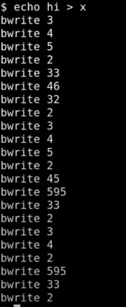
很明显这里的记录要比只在 log_write 中记录要长的多。之前的 log_write 只有 11 条记录但是可以看到实际上背后有很多个磁盘写操作，让我们来分别看一下这里的写磁盘操作：
-
首先是前 3 行的 bwrite 3，4，5。因为 block 3 是第一个 log data block，所以前 3 行是在 log 中记录了 3 个写操作。这 3 个写操作都保存在 log 中，并且会写入到磁盘中的 log 部分。
-
第 4 行的 bwrite 2。因为 block 2 是 log 的起始位置，也就是 log header，所以这条是 commit 记录。
-
第 5，6，7 行的 bwrite 33，46，32。这里实际就是将前 3 行的 log data 写入到实际的文件系统的 block 位置，这里实际是 install log。
-
第 8 行的 bwrite 2，是清除 log（注，也就是将 log header 中的 n 设置为 0）。到此为止，完成了实际上的写 block 33，46，32 这一系列的操作。第一部分是 log write，第二部分是 install log，每一部分后面还跟着一个更新 commit 记录（注，也就是 commit log 和 clean log）。
# File system challenges
这一章我理解无能
介绍一下三个复杂的地方或者也可以认为是三个挑战。
-
第一个是 cache eviction。
假设 transaction 还在进行中，我们刚刚更新了 block 45，正要更新下一个 block，而整个 buffer cache 都满了并且决定撤回 block 45。在 buffer cache 中撤回 block 45 意味着我们需要将其写入到磁盘的 block 45 位置，这里会不会有问题？如果我们这么做了的话，会破坏什么规则吗？是的，如果将 block 45 写入到磁盘之后发生了 crash，就会破坏 transaction 的原子性。这里也破坏了前面说过的 write ahead rule，write ahead rule 的含义是，你需要先将所有的 block 写入到 log 中，之后才能实际的更新文件系统 block。所以 buffer cache 不能撤回任何还位于 log 的 block。
前面在介绍 log_write 函数时，其中调用了一个叫做 bpin 的函数，这个函数的作用就如它的名字一样，将 block 固定在 buffer cache 中。它是通过给 block cache 增加引用计数来避免 cache 撤回对应的 block。在之前我们看过，如果引用计数不为 0，那么 buffer cache 是不会撤回 block cache 的。相应的在将来的某个时间，所有的数据都写入到了 log 中，我们可以在 cache 中 unpin block（注：install_trans 函数中会有 unpin，因为这时 block 已经写入到了 log 中）。所以这是第一个复杂的地方，我们需要 pin/unpin buffer cache 中的 block。
-
第二个挑战是，文件系统操作必须适配 log 的大小。
在 XV6 中，总共有 30 个 log block。当然我们可以提升 log 的尺寸，在真实的文件系统中会有大得多的 log 空间。但是无所谓啦，不管 log 多大，文件系统操作必须能放在 log 空间中。如果一个文件系统操作尝试写入超过 30 个 block，那么意味着部分内容需要直接写到文件系统区域，而这是不被允许的，因为这违背了 write ahead rule。所以所有的文件系统操作都必须适配 log 的大小。
为什么 XV6 的 log 大小是 30？因为 30 比任何一个文件系统操作涉及的写操作数都大，Robert 和我看了一下所有的文件系统操作，发现都远小于 30，所以就将 XV6 的 log 大小设为 30。我们目前看过的一些文件系统操作，例如创建一个文件只包含了写 5 个 block。实际上大部分文件系统操作只会写几个 block。你们可以想到什么样的文件系统操作会写很多很多个 block 吗？是的，写一个大文件。如果我们调用 write 系统调用并传入 1M 字节的数据，这对应了写 1000 个 block，这看起来会有很严重的问题，因为这破坏了我们刚刚说的 “文件系统操作必须适配 log 的大小” 这条规则。
-
最后一个要讨论的挑战是并发文件系统调用。让我先来解释一下这里会有什么问题，再看对应的解决方案。假设我们有一段 log，和两个并发的执行的 transaction，其中 transaction t0 在 log 的前半段记录，transaction t1 在 log 的后半段记录。可能我们用完了 log 空间，但是任何一个 transaction 都还没完成。
现在我们能提交任何一个 transaction 吗？我们不能，因为这样的话我们就提交了一个部分完成的 transaction，这违背了 write ahead rule，log 本身也没有起到应该的作用。所以必须要保证多个并发 transaction 加在一起也适配 log 的大小。所以当我们还没有完成一个文件系统操作时，我们必须在确保可能写入的总的 log 数小于 log 区域的大小的前提下，才允许另一个文件系统操作开始。
XV6 通过限制并发文件系统操作的个数来实现这一点。在 begin_op 中，我们会检查当前有多少个文件系统操作正在进行。如果有太多正在进行的文件系统操作，我们会通过 sleep 停止当前文件系统操作的运行，并等待所有其他所有的文件系统操作都执行完并 commit 之后再唤醒。这里的其他所有文件系统操作都会一起 commit。有的时候这被称为 group commit，因为这里将多个操作像一个大的 transaction 一样提交了，这里的多个操作要么全部发生了，要么全部没有发生。